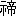

自分には孔子について書くだけの研究も素養も準備もない。その自分を無理にしいてこの書を書くに至らしめたのは小林勇君である。が、書いてしまった以上は、この書の責任は自分が負うほかはない。自分は甘んじて
俎上に横たわろうと思う。
右のような次第であるから、この書には自分の気づかぬいろいろな誤謬があるかも知れぬ。が、自分が志したのは、いまだ孔子に触れたことのない人に『論語』を熟読玩味してみようという気持ちを起こさせることであった。それが成功しなければ、『論語』をいまだ読まない人が依然としてそれを読まないというだけのことであり、幸いにして成功しても、あとには専門家の注釈や研究が数え切れないほどあるのであるから、自分の誤謬が人を誤ることもなかろうと思われる。と言って、すでに『論語』を知っている人にはこの書は全然用がないというわけでもない。そういう人にも他山の石としてはいくらか役立つであろう。
この書において用いた『論語』は、武内義雄氏校訂訳注の岩波文庫本である。この『論語』の本文と日本訳とは専門家の間に必ずしも賛同しない人があるようであるが、しかし自分はいろいろ比較研究の上、これを最もよい『論語』のテキストだと考えたのである。引用文もすべて武内氏の日本訳によった。武内氏が加えられた注釈もそのままにしてある。なお他に、藤原正氏
纂訳『孔子全集』からもいろいろ益を得た。この『全集』は藤原氏苦心の労作だけあって非常に便利にできている。いっこう素養のない自分にとにかくこれだけのものが書けたのは両氏のおかげである。
昭和十三年八月
著者
［＃改ページ］
今度岩波書店の諒解を得て、少しく増補の上、植村道治君の手により再版をおこすことになった。増補は巻末の付録のはじめに述べたように武内博士の『論語之研究』に関するものである。
昭和二十三年三月
著者
［＃改ページ］
釈迦、孔子、ソクラテス、イエスの四人をあげて世界の四聖と呼ぶことは、だいぶ前から行なわれている。たぶん明治時代の我が国の学者が言い出したことであろうと思うが、その考証はここでは必要でない。とにかくこの四聖という考えには、西洋にのみ
偏らずに世界の文化を広く見渡すという態度が含まれている。インド文化を釈迦で、シナ文化を孔子で、ギリシア文化をソクラテスで、またヨーロッパを征服したユダヤ文化をイエスで代表させ、そうしてこれらに等しく高い価値を認めようというのである。ではどうしてこれらの人物が、それぞれの大きい文化潮流を代表し得るのであろうか。どの文化潮流も非常に豊富な内容を持っているのであって、一人の人物が代表し得るような単純なものではないはずである。しかも人がこれらの人物をそれぞれの文化潮流の代表者として選び、そうしてまた他の人々がそれを適切として感ずるのは、何によるのであろうか。自分はそれを、これらの人物が「人類の教師」であったという点に見いだし得ると思う。
この答えは一見したところ矛盾に見えるかも知れない。なぜならこれらの人物はそれぞれ異なった文化潮流の代表者とせられるのであるから、それぞれその文化潮流の特異性を表現していなくてはならない、しかるにその代表者たるゆえんは人類の教師たるにあってその特異性の表現にあるとはせられないのだからである。しかしこれは決して矛盾ではない。それを矛盾と感ずるのは、いかなる特殊な文化にも彩られない普遍的な人類の教師とか、全然普遍的な意義を担わない特殊な文化とかというごとき抽象的な想定に
囚われているからである。現実の歴史においては、いずれかの文化の伝統によって厳密に限定せられているのでない人類の教師などというものは、かつて現われたこともないし、また現われることもできないであろう。また普遍的な意義を現わすがゆえにまさに文化として存立するのだということの言えないような特殊の文化などというものも、かつて形成せられたことはないし、また形成せられ得ないであろう。最も特殊的なるものが最も普遍的な意義価値を有するということは、何も芸術の作品に限ったことではない。人類の教師においてもそうである。
我々はここに人類の教師という言葉を用いるが、それによって「人類」という一つの統一的な社会を容認しているのではない。現代のように世界交通の活発となった時代においてさえ、地上の人々がことごとく一つの統一に結びついているというごとき状態からははるかに遠い。いわんや
如上の四聖が出現した時代にあっては、彼らの眼中にある人々は地上の人々全体のうちのほんの一部分であった。孔子が教化しようとしたのは黄河下流の、日本の半分ほどの地域の人々であり、釈迦が法を説いて聞かせたのもガンジス河中流の狭い地域の人々に過ぎぬ。ソクラテスに至ってはアテナイ市民のみが相手であり、イエスの活動範囲のごときは
縦四十里横二十里の小地方である。が、それにもかかわらず我々は彼らを人類の教師と呼ぶ。その場合の人類は、地上に住む人々の全体を意味するのでもなければ、また人という生物の一類をさすのでもない。さらにまた「閉じた社会」としての人倫社会に対立させられた意味での「開いた社会」をさすのでもない。それぞれの小さい人倫的組織を内容とせずには人類の生活はあり得ないのである。実際においても人類の教師の説くところは主として人倫の道や法であって、人倫社会の外なる境地の消息ではなかった。彼らが人類の教師であるのは、
いついかなる社会の人々であっても、
彼らから教えを受けることができるからである。
事実上彼らの教えた人々が狭く限局せられているにかかわらず、
可能的にはあらゆる人に教え得るというところに、人類の教師としての資格が見いだされる。従ってこの場合の「人類」は事実上の何かをさすのではなくして、地方的歴史的に
可能なるあらゆる人々をさすにほかならない。だから人類は事実ではなくして「理念」だと言われるのである。
人類の教師の持つ右のごとき普遍性は、その教師の人格や
智慧にもとづく、と通例は考えられる。もしそうであるならば、これらの教師の活動を目前に見た人々の内には、直ちにそれを人類の教師として洞察し得る人もあってしかるべきである。だからこれらの教師の伝記を語る人々は、これらの教師が周囲から認められず、迫害や侮蔑を受けている最中にも、すでにこれらを人類の教師として承認している少数者を描くのである。しかし少数者のみがそれを真の教師として認め、大衆がそれを認めない時に、果たしてその教師は人類の教師であり得るであろうか。いついかなる社会にも、少数の狂信者に取り巻かれた教師というものは存在するのである。目前の我々の社会においてもその例は数多くあげることができるであろう。それらは世界の歴史においては幾千幾万となく現われ、そうして
泡沫のごとく消えて行った。だから少数者の洞察などというものも、当てにならない方が多いのである。
では大衆が直ちに目前の教師の人格や智慧を礼讃し始めた時はどうであるか。その場合には生前からしてすでに人類の教師となるはずではないか。しかるに事実はそうではないのである。大衆は必ずしも優れたもののみを礼讃しはしない。天才と呼ばれている人々が生前に大衆の歓迎を受けたという例はむしろまれである。いわんや人類の教師とも言わるべき人々がその時代の大衆に認められたなどという例は、全然ない。人類の教師たり得るような智慧の深さや人格の偉大さは、大衆の眼につきやすいものではないのである。大衆の礼讃によって生前からその偉大さを確立した人々は、人類の教師ではなくして、むしろ「英雄」と呼ばるべきものであろう。もちろんこの場合にも大衆の礼讃した人々がことごとく英雄となるのではない。大衆はしばしば
案山子をも礼讃する。しかし生前すでに大衆の礼讃を獲得し得なかったような英雄もまた存しないのである。この点において人類の教師と英雄とは明白に相違する。人類の教師であると否とは同時代の大衆の承認によって定まるのではない。
では人類の教師が人類の教師として認められるに至るのはいかなる経路によるのであろうか。言いかえれば、人類の教師はいかにしてその普遍性を獲得したのであろうか。
通例伝記者の語るところによれば、人類の教師は皆よき弟子を持った。その中には十哲とか、十大弟子とか、十二使徒とかと呼ばれるような優れた人物があった。そうしてそれらの弟子は、その師が真に道の体得者であり、
仁者であり、
覚者であることを信じ切っていた。同時代の大衆がいかにその師を迫害し侮蔑しようとも、この信頼は決して揺るがなかった。が、これだけならば前に言ったような狂信者に取り巻かれた教師と異なるところがない。大切なのはこれから先である。師が毒杯とか十字架とかによって死刑に処せられた後に、あるいは生涯用いられることなく親しい二、三の弟子の手に死ぬことに満足した（
『論語』子罕一二）後に、弟子たちはその師の道や真理を宣伝することに努力した。この努力がたちまちに開花し結実したのはソクラテスの場合である。弟子プラトンと孫弟子アリストテレスとは、師の仕事を迅速に完成して西洋思想の源流を作った。これらの偉大な弟子の仕事が人々に承認せられれば、その弟子の仕事の中にその魂として生きているソクラテスが、一層偉大な教師として承認せられないはずはないのである。他の場合には弟子たちの努力は一世代や二世代では尽きなかった。現在残っている最古の資料は、いずれも孫弟子の手になったものと考えられる。釈迦については
阿含経典の最も古い層がそうである。イエスについてはパウロの書簡も福音書もそうである。孔子に関しても同様のことが言えるであろう。『論語』は孫弟子の記録よりも古いものを含んではいない。そうして孫弟子たちは皆さらにその弟子たちを教えるためにこれらの記録を作ったのである。だから最古の記録によってこれらの教師に接しようとするものでも、
曾孫弟子の立場より先に出ることはできない。このことは教師たちの人格と思想とが、
時の試練に
堪え、幾世代もを通じて働き続けたことを意味するのである。しかも彼らは働き続けるほどますます感化力を増大した。たといその生前にわずかの人々をしか感化することができなかったとしても、時のたつにつれてその感化を受ける人々の数はふえて行く。従って同時代の大衆を動かし得なかった教師たちも、歴史的にははるかに多く広汎な大衆を動かすこととなるのである。かくして彼らは偉大な教師としての動くことのない承認を得て来た。
が、これらの偉大な教師が人類の教師としての普遍性を
得来たるためには、さらにもう一つの重大な契機を必要とする。それはこれらの偉大な教師を生んだ文化が、一つの全体としてあとから来る文化の模範となり教育者となるということである。それは逆に言えば、これらの古い文化が、その偉大な教師を生み出すとともにその絶頂に達してひとまず完結してしまったということを意味する。ソクラテスを生んだギリシアの文化は、彼の弟子と孫弟子とがこの師の偉大さをはっきりと築き上げたころに、
すでにその終幕に達した。そのあとにはこのギリシア文化を世界に
伝播する時代、すなわちヘレニスト的時代が続き、次いでこの文化の教育の下に新しいローマの文化が形成されてくる。それが東方の宗教に打ち
克たれた後にも、キリストの教会内の哲学的な思索は、ソクラテスの弟子と孫弟子の指導の下にあった。さらにこの東方の宗教の専制を打ち破った近代のヨーロッパにおいては、哲学の模範がソクラテスの弟子と孫弟子とに認められたのみでなく、この新しい文化の魂がギリシア文化の再生にあるとさえも考えられた。このような事情の下に、
アテナイの偉大な教師であったソクラテスが、人類の教師としての普遍性を得て来たのである。同様にまたイエスを生んだユダヤの文化も、パウロがその神学を築き上げたころには、ローマの世界帝国の中に影を没してしまった。それは影を没しつつも決してその存在を失わない不思議な文化ではあるが、しかし旧約のさまざまな文芸を作りつつあった時代、またとにもかくにも死海のほとりにその本拠を持っていた時代に比べると、パウロ以後のユダヤ文化はすでに完結して旧約の中に保存せられたものという
趣を呈して来るのである。しかもこのユダヤの文化はイエスの福音と結びついてローマ帝国を征服した。さらに中世に至ればヨーロッパ全体を征服した。そうしてヨーロッパの諸民族にその背負っている伝統を捨てさせ、ただ旧約の所伝のみが唯一の正しい人類の歴史であると信じ込ませた。一つの民族の文化が他の民族を教育する場合にこれほど徹底的な感化を与えた例は他には存しないのである。この感化は近代に至ってギリシア文化が再生した後にも容易に衰えない。あるいはヨーロッパにおいて衰えただけを世界の他の諸地方において回復したとも言えるであろう。こういう事情の下に
ユダヤ人の救世主であったイエスが人類の救世主としての普遍性を獲得して来たのである。
では釈迦はどうであるか。釈迦を生んだインドの文化は、彼のあとにひとまずその終幕に達したであろうか。しかりと自分は答える。そのためには我々は「インド」が何であるかを反省してみなくてはならない。インドとはギリシアとかローマとかのような国の名あるいは文化圏の名ではなくして、ヨーロッパというごとき地域の名なのである。この地域の内に種々の民族が住み、さまざまの国が興亡し、さまざまの文化が形成せられた。釈迦が現われたのは、このインドの地域に西方から侵入したアリアン人が、ガンジスの流域に落ちつき、ヴェダからウパニシャドまでの文化を形成した後であった。そこには固い四姓制度が行なわれ、貴族政治による小さい国々が分立していた。釈迦はこの古い文化の伝統に対する革新者としてバラモンの権威に挑戦し、アートマンの形而上学を
斥け、四姓制度の内面的な打破を試みたのである。ここに我々は釈迦を、永い古い文化の言わば否定的な結晶として見いださざるを得ない。果たして彼の死後五十年（あるいは百五十年か）のころには、アレキサンダー大王の影響の下に、インドの地域にかつて作られたことのない大帝国が建設せられた。これは古来武士階級を抑えていたバラモンの権威の
顛覆である。インドの社会は釈迦以前と異なるものになったのである。次いで北西インドにはギリシア人が侵入し、ギリシア風の都市と国とを建設した。さらにそのあとにスキタイ人が北から入り込んで、ガンジスの上流にまで及ぶ強大な国を建てた。釈迦に至るまでの古い文化はこれらの時代に一応中断せられたと認めざるを得ない。しかも古い文化の結晶たる釈迦の教えは、この新しい国々を教育した。仏教興隆によって有名なアショカ王がいかに深く仏教に心酔したかは、彼の残した碑文が明らかに示している。それは四姓の別を打破し、慈悲を政治によって実現しようとしたものである。さらにギリシア人がインドに入るとともに仏教に化せられたことは、有名な『ミリンダ王経』（
那先比丘経）がこれを証示する。次のスキタイ人が仏教に化せられたこともまたカニシカ王の事績を見れば明らかである。もっとも仏教は、かく新しい国や民族を教化することによって、自らもまた新しくなった。大帝国を教化するに当たっては、釈迦の時代に思いも及ばなかった「
転輪聖王」の理想が作られている。ギリシア人やスキタイ人を教化した際には、かつてインド人の思いも及ばなかった仏像彫刻が作られ始めた。ヴェダやウパニシャドにおいて、思想を表現するにも抒情詩風の形式をしか用いなかったインド人が、この時以来戯曲的構成を持った雄大な仏教経典を作り始めた。かくして仏教の中から
溌剌として大乗仏教が興り、華麗な芸術と深遠な哲理とを展開したのである。そうしてこの大乗仏教が、インドから北へ出て中央アジアに栄え、さらに東してシナに広がり日本に及んだのである。これらの事情の下に、
四姓制度の社会における覚者であった釈迦が、人類の覚者としての普遍性を得て来たのである。
しからば最後に孔子はどうであるか。孔子を生んだシナの文化が孔子の後にその幕を閉じたなどとは何人も認め得ないであろう。インドは中世紀以後モハメダンの
蹂躙に逢い、仏教は地を払った。仏教のインドは全然の過去である。しかしシナにおいては孔子の教えは漢に栄え、唐宋に栄え、明清に栄えたではないか、と人は言うかも知れない。しかし自分の見るところはそうではない。孔子を生んだ先秦の文化は戦国時代にひとまずその幕を閉じたのである。ここでも我々はインドと同じく「シナ」が単に地域の名であって国の名でもなければ民族の名でもないことを銘記しなくてはならない。この地域において種々の民族が混融し交代し、種々の国々が相次いで興亡したことは、ちょうどヨーロッパにおいてギリシア、ローマ相次ぎ、種々の民族が混融し、近代の諸国家が興ったのと、ほとんど変わるところがない。先秦の文化が伝説にいう周の文化として完成せられ、その末期の春秋時代に至って反省せられ、次いで戦国の時代の混乱と破壊とによって次の新しい文化に所を譲ったことは、ちょうどギリシアがローマに変わったことと同じ意味に解せられねばならない。戦国時代における
夷狄との
混淆は顕著な事実である。そうして終局において大きい統一に成功した秦はトルコ族や蒙古族との混淆の最も著しい国であった。この統一の事業をうけついだ漢もまた異民族との混淆の著しい
山西より起こった。すなわちここで黄河流域の民族は一新したのである。そうしてその社会構造をも全然新しく作り変えたのである。もちろん漢代においても先秦の文化は引きつがれている。しかしローマはギリシアを征服することによって文化的には逆にギリシアに征服せられたと言われる。先進の文化が後来の民族を教化することは、いずこにおいても同じである。同様にローマの文化がギリシア文化の一つの発展段階と見られないように、秦漢の文化もまた先秦の文化の一つの発展段階なのではない。ギリシア文化に教育せられつつローマ文化がローマ文化として形成せられたように、先秦の文化に教育せられつつも秦漢の文化は秦漢の文化として形成せられたのである。この関係を正視すれば、孔子もまた一つの文化の結論として出現したということは、何ら疑いを容れないのである。
シナの民族はしばしば「漢人」と呼ばれる。しかし漢はシナの地域における一時代の国名であって、シナの地域の民族の名とすべきものではない。漢代の黄河流域の民族は、周の文化を作った民族の中へ周囲の異民族の混入したものであるが、しかしそれも四、五百年間続いただけであって、漢末より隋唐に至るまでの間には再び大仕掛けな民族混淆に逢っている。蒙古民族、トルコ民族、チベット民族などがはいって来たのである。この際には前と違って異民族が自ら黄河流域に国を建てた。五胡十六国と言われているようにその交代は頻繁であったが、蒙古民族たる
鮮卑の建てた北魏のごときはかなり強大であった。こういう状態が二、三百年も続いて、それで民族が新しく作り変えられないはずはないのである。だからそのあとに来た
隋唐の統一時代のシナが、文化の上から言っても漢文化と著しく異なっているのは当然である。美術や文芸の様式などは実に徹底的に違っている。この統一時代が三百年続いたあとで、唐末五代のころには再びトルコ民族が黄河流域にはいって国を建てた。次いで宋の時代になっても、北辺の蒙古民族
契丹の国ははなはだ強大であって、西方からシナを呼ぶに Kitai→Cathay をもってせしめるほどであった。この情勢は満州民族を
蹶起せしめ、ついに満州より黄河流域にわたる強力な金の建国となって、北方シナに満州民族の血を注ぎ入れた。宋は揚子江流域に圧迫せられつつ同時に南方の諸民族の同化につとめ、ここにも有力な民族混淆をひき起こした。こういう状勢のあとでジンギスカンの統率する蒙古人が北から圧迫を始め、ついに金を亡ぼし、南宋を亡ぼして、シナ全土に強力な元の支配を築いた。シナに侵入してシナの民族を統治する場合に、シナの文化に化せられないで、あくまでも己れの風習をシナの民族に押しつけようとしたのは、この時の蒙古人が初めである。元の支配は百年ほどに過ぎなかったが、しかしシナの在来の知識階級を徹底的に抑圧し、あるいは
殲滅したと言われている。元末に起こった反抗運動はすべて土民の手によって起こされたものであって、処士のこれに加わったものは一人もなかった。こういう連続的な異民族の侵入が三百年ほども続いたあとで、再び
明の統一が打ち立てられたとき、その文化がまた唐の文化と著しく異なったものとなったのは当然であろう。唐の制度は永い間模範として用いられていたが、明はこれを根本的に改めて、極端に君主独裁的な制度を作った。律令も兵制も改定された。社会組織も更新された。現代にも存続する郷党の制度はこの時の振興にもとづくと言われている。さらに唐宋の豊麗な詩文に対して、明は『水滸伝』、『西遊記』、『金瓶梅』のごときを特徴とする。唐宋の醇美な彫刻絵画に対して、明は
宣徳・
嘉靖・
万暦の
陶瓷、
剔紅、
填漆の類を特徴とする。ただ学術においては、唐宋における仏教哲学や儒学の隆盛に対して、明は創造力の空疎を特徴とすると言うべきであろう。この傾向は清朝を通じて現代に及んでいる。
以上のごとく見れば、同じシナの地域に起こった国であっても、秦漢と唐宋と明清とは、ローマ帝国と神聖ローマ帝国と近代ヨーロッパ諸国とが相違するほどには相違しているのである。ヨーロッパに永い間ラテン語が文章語として行なわれていたからと言って、それがローマ文化の一貫した存続を意味するのでないように、古代シナの古典が引き続いて読まれ、古い漢文が引き続いて用いられていたからと言って、直ちに先秦文化や漢文化の一貫した存続を言うことはできない。にもかかわらず先秦と秦漢と唐宋と明清とが、
一つの文化の異なった時代を示すかのごとくに考えられるのは、主として「漢字」という不思議な文字の様式に帰因すると考えられる。文字は元来「書かれた言葉」として「話された言葉」に対立するものであるが、かく言葉を視覚形象によって表現するには、直接に
その意味を現わす形象を用いることもできれば、また意味を現わすに用いられている
音声を表示する
記号を用いることもできる。現代世界に最も広く用いられているのはフェニキアに始まった音表記号であって、一々の文字は単に音を示すに過ぎず、それが相寄って一定の
音の連関を表示するとき初めてそこに話される言葉の表現が成り立つのである。だから一々の文字が共通であっても、それによって表現せられる言語は全然異なったものであり得る。のみならずそれは発音に忠実であるために同一の言語を分化せしめる傾向さえも持っている。たとえば同じラテン語が地方によって異なった
訛りを帯びて来る。それを発音通りに書き記せば、ラテン語と異なったイタリー語やフランス語が成立して来るというがごときである。が、このような分化の傾向は古き文化の伝統を保持するに不便であるために、先行の文化語の文字的表現をそのまま持続しつつ、一々の文字の音表的作用を変化して行く場合もある。フランス語がラテン語からの由来を保持するためにラテン語の
音綴をそのまま襲用しつつそれによって異なった音の連関を表示し始めたごときがそれである。近世の初めにラテン文からの解放を望んで自国語の文章を書き始めた時、フランス人はその音声に忠実な綴字を用いようとしたことがあった。が、それは己が文化の根源たるラテン文化からほとんど離別するがごとき観を呈した。だからその運動はまもなく逆転して、できるだけ忠実にラテン語の
綴りを保持する運動に変わったのである。テンプス（tempus）とほぼ同じく temps と綴りながら、タンというフランス語を現わすというごときがそれである。だから音綴文字といえども、必ずしも音声の表示に徹底しているというわけではない。
文化の伝統がこの徹底をさまたげる。そうしてちょうどここに文字の他の様式、すなわち直接に意味を現わす形象が、その独特の生命を保持し得るゆえんも存するのである。かかる文字の一つの様式としては、フェニキアに近いエジプトにすでに古くより象形文字が存していた。が、それはフェニキアの音綴文字に
駆逐せられて死滅してしまった。実用的に言ってとうていフェニキア文字の敵ではなかったのであろう。しかるに漢字は、もと象形文字に端を発したかも知れないが、やがて象形文字の直観的
煩雑性を克服し、半ばは音表文字の作用をも勤めつつ、直接に意味を現わす形象として、異常な発達を示して来たのである。これは一つにはシナの地域において文化を作った民族の言語が
単綴語であったことにも関係するであろう。が、最も有力な原因は、
文字の本質が視覚形象によって意味を表現するにあるという点に存すると思う。言語は必ずしも
音声によって表現せられねばならぬのではない。従って音声を表示する記号のみが文字なのではない。音声の媒介を経ずに直接に意味を現わしても、それは文字としての資格に欠くるところはない。もしかかる形象が使用上においても大なる不便なく作り出されるならば、それは文字としてはむしろその本質に忠なるものと言わねばならぬ。漢字は直観性と抽象性との適度なる交錯によって、ちょうどかかる形象として成功したものなのである。そうしてひとたびかかる文字が成立するとともに、それは音綴文字とはなはだしく異なった効用を発揮し始める。すなわち同一の文字が音声的に異なった言語を表現し得るということである。言語が地方的にいかに異なった
訛りを帯びて来ようとも、文字的表現においては常に同一であり得る。また時代的に発音が変遷して行っても、文字は
毫も変わらないでいることができる。かかる漢字の機能のゆえに、シナの地域における方言の著しい相違や、また時代的な著しい言語の変遷が、かなりの程度まで隠されていると言ってよいのである。現代のシナにおいて、もし語られる通りに音表文字をもって現わしたならば、その言語の多様なることは現代のヨーロッパの比ではないであろう。またもしシナの古語が音表文字をもって記されていたならば、先秦や秦漢や唐宋などの言語が現代の言語と異なることは、ギリシア語やラテン語やゲルマン語が現代ヨーロッパ語と異なるに譲らないであろう。しかるに漢字はこれら一切の相違を貫ぬいて共通なのである。すなわち「書かれた言葉」が地方的時代的に同一なのである。言いかえればシナの地域においては二千数百年の間同一の言語が支配した。これは一つの文化圏の統一を示すものとしては、無視することのできない有力なものに見える。ここに我々は先秦の文化や漢文化が
一つの文化の異なった時代と考えられる窮極の根拠を見いだし得ると思う。しかしこのような文字の同一は、漢字という文字の様式に帰因するのであって、必ずしも右のごとき緊密な文化圏の統一を示すものではない。フェニキアの音綴文字を襲用した諸文化国がフェニキア文化の圏内に統一せられていると言えないように、漢字を襲用した我が国の文化もシナの文化圏に統一せられているのではない。漢字はその性質上、言語として全然異なっている我が国語さえも表現することができる。ヤマを山の字によって、カワを河の字によって現わすという類である。が、かかる事態が直ちに我が国の文化とシナの文化との統一を示すのではない。それと同じく文字の同一は、直ちに先秦や、秦漢や、唐宋などの文化の異質性を消すことはできないのである。
我々は孔子が人類の教師として普遍性を得て来たことを理解するために、右の事態を正視することが必要であると考える。孔子は先秦の文化の結晶として現われながら、それと質を異にする漢の文化のなかに生きてこれを教化し、さらにまたそれと質を異にする唐宋の文化のなかに生きてこれを教化した。もちろん漢代に理解せられた孔子と、宋代に理解せられた孔子とは、同一ではない。また漢の儒学はその孔子理解を通じて漢の文化を作ったのであり、宋学もその独特な孔子理解を通じて宋の文化を作ったのである。が、これらの歴史的発展を通じて
魯の一夫子孔子は人類の教師としての普遍性を獲得した。この点においては他の人類の教師と異なるところはないのである。
［＃改ページ］
人類の教師が人類の教師と
成るのは、一つの大きい文化的運動である、ということを我々は見て来た。それは他の言葉で言えば、一つの高い文化が一人の教師の姿において
結晶して来るということなのである。この結晶の過程のうちには前に言ったように弟子たちの感激や孫弟子たちの尊崇や、さらにその後の時代の共鳴・理解・尊敬などが、数限りなく加わっている。これらは教師の感化が真正であったからこそ時の訓練に
堪えて増大して来たのであるが、しかしまた感化を受けた弟子たちが常にその教師の優れた点、感ずべき点に注意を集中し、そうしてそれらの点をより深く理解しようと努力したことにももとづくのである。これは通例「理想化」と呼ばれている過程であるが、しかしそれをやっている当人たちは決して教師の正真の姿を
現実以上に美化しようなどと意図しているのではない。彼らは自分たちがいかに理解の努力をしてもなおその教師の人格と智慧の深さを測り得ないと感じつつ、
教師の真面目に迫る努力を続けて行ったのである。が、この努力のゆえに、あとから来る弟子たちに対する教師の感化力はさらに大きくなって来る。なぜなら、自ら直接に教師に接し得ない弟子たちは、先輩弟子の与えたこの教師の姿、すなわち優れた点や感ずべき点のみからできているこの教師の姿にのみ接するのだからである。この関係は、世代が移るに従ってますます激化される。そうしてそれぞれの世代が人間の智慧と人格とにおいて
最も深きものと考えるさまざまの点をこの教師の内に見いだして行くことになる。これが偉大な教師の姿の結晶し来たる経路なのである。そうしてみれば人類の教師は、長期間にわたって、無数の人々の抱く理想によって作り上げられて来た「理想人」の姿にほかならぬとも言い得られよう。
人類の教師がこういうものであれば、その真の伝記は右の
結晶の経路を
把捉したものでなくてはならぬ。それは文化史的発展の理解であって、個人の生涯の理解ではないのである。しかも人類の教師の伝記は常に個人の生涯の記録として取り扱われて来た。従ってこの伝記がいかなる真実性を持つかを問題とする時、そこには常に強い疑惑が
湧き上がって来ざるを得ないのである。
ソクラテスはクセノフォンの『メモラビリア』のみならず、プラトンの優れた諸対話篇のなかに鮮やかに描かれている。イエスの生涯は四福音書に
詳らかである。釈迦の伝記に至っては、小乗の経律を初めとして大乗の諸経典に至るまでその多きに苦しまざるを得ぬ。孔子もまた『史記』の「
孔子世家」を初めとして、『孔子
家語』『
孔叢子』などに詳らかに伝せられている。これらの伝記を読んでそのままに信じてしまえば何の問題も起こらない。古来多くの人々がそうして来た。しかしひとたびこれらの伝記に対して疑問を起こし始めると、どうにも納まりがつかないほどに問題は
紛糾して来るのである。
ソクラテスは直弟子のクセノフォンとプラトン、孫弟子のアリストテレスが記録を残しているのであるから、伝記が
曖昧だなどということはなさそうに見える。しかしできるだけ厳密にソクラテスの姿を捕えようと努力している学者に言わせると、やさしそうに見えるだけかえって他の場合よりも困難なのである。ソクラテスの姿はクセノフォンとプラトンとではいろいろな相違がある。プラトンだけによるとしてもその対話篇の異なるに従って描写が違ってくる。そのプラトンとアリストテレスでもまた相違がある。だからこれらの同じ材料を使いながらも、解釈する人の立場に従ってそれぞれソクラテスの姿が異なって来るのである。啓蒙主義の通俗哲学者メンデルスゾーンの手にかかればソクラテスもまた啓蒙主義的通俗哲学者になる。カント派の手にかかればソクラテスはカントを先駆した批判哲学者である。浪曼派のソクラテスはキリストを先駆する神秘家となっている。歴史家グロートは当時のアテナイの宗教的情勢から見て、ソクラテスをデルフォイの神託の宗教的伝道家として描いた。ソクラテスの仕事は、宗教的霊感のもとに、生ける弁証法となることであったと言われる。しかるにヘーゲルの見たソクラテスは、徹底的な合理主義者であって、その哲学により古い信仰や風習から
訣別したことになっている。その流れを
汲むツェラーによれば、ソクラテスは初めて哲学を概念の上に基礎づけ、理論的論理学の原理を発見した。さらにフイエーに至ればソクラテスは思弁哲学者であり精神的形而上学の創始者とせられる。この種の例は数えきれないほどあるのである。
これらの学者は皆原典に根拠を求めてその主張を出しているのであって、勝手な
臆測をやっているのではない。しかもそれが右のように帰一するところを知らないのである。そうなると、真にソクラテスの姿を捕え得るためには、ソクラテスを伝える根本資料の公明な検討をやっておかなくてはならない。すなわち
厳密な原典批評が何よりも必要なのである。もっともこういう研究がこれまでなされなかったというのではない。哲学者たるとともにまた
傑れた古典文学者であったシュライエルマッヘルは、クセノフォンのソクラテス描写とプラトン、アリストテレスのそれとを比較検討して、クセノフォンはだめだという結果に達した。この意見はかなり広く用いられたものである。しかしクセノフォンがソクラテスの偉さを真に理解していなかったというようなことで、クセノフォンの記録が捨てらるべきものであろうか。クセノフォンはプラトンやアリストテレスのように己れの立場を持った哲学者ではない。彼はただ単純にその見聞を語っているのである。しからば彼はソクラテスの偉さを真に理解していなかったとともにまたきわめて素朴にソクラテスの面影を伝えているということもあり得はしないであろうか。そう考えると根本資料の検討はさらに厳密にやり直されねばならぬのである。ではそういう文学的な研究において何らかの一致点が見いだされたであろうか。必ずしもそうではないのである。たとえばハインリヒ・マイヤーの『ソクラテス』はなかなかすぐれたよい研究であるが、同じようにすぐれているテイラーのソクラテスとはまるで違った結論に達している。マイヤーは根本資料をそれぞれその製作の側からながめつつその史料としての価値を定めようとした。最も価値の高いのは結局プラトンの初期の著作である。『弁明』や『クリトン』においては、己れを
空しうしてソクラテスに
帰依する弟子が、
敬虔な忠実さをもって師の姿を描こうとしている。しかも描写の腕はすばらしく
冴えている。だからこの両篇におけるソクラテスの姿は、自己なきまで
現実に忠実な天才芸術家の描写なのである。プラトンの対話篇中ソクラテス史料として価値あるものは、なお他に『ラケス』『小ピピアス』『カルミデス』およびおそらく『イオン』を数えることができる。これらはプラトンの感情が静まってから、ソクラテスの倫理的弁証法を
文章によって継続したものである。だからここには、ソクラテスをして死後にも人格的に活躍せしめようとする意図の下に、
ソクラテス的会話の模倣が試みられている。それは歴史的事件の描写ではない。しかもソクラテスの姿を伝えるという史料的価値を持つのである。以上の史料を通じて見られるソクラテスは、学者でも哲学者でもなくして、
倫理的生活の覚醒に努める福音の宣伝者にほかならない。上掲の諸篇以後のプラトン対話篇は、徐々にソクラテスを離れる。『ゴルギアス』に現われる哲学はもはやソクラテスの倫理的弁証法ではない。『饗宴』に至っては明白にプラトンの思想的立場が独立してくる。この後の諸篇においてはいかにソクラテスが論じていても皆プラトンの思想を語っているのである。以上のごときがマイヤーの研究の結果であった。しかるにテイラーに言わせると、そういうふうにプラトン自身の著作のなかからソクラテスとプラトンとを見分けようなどとしても、今日ではもはや到底できるわけのものでない。プラトンの著作の中にソクラテスの言葉として現われてくるものは、皆ソクラテスの思想と見るほかはないのである。そうなるとソクラテスはイデアの哲学者になってしまう。どっちが真のソクラテスであるかは依然としてわからない。
イエスの伝記に関しては、処女懐胎による誕生といい、死人の復活その他さまざまの奇蹟といい、近代人の疑問をそそる点が多く、早くよりそれを合理的に説明しようとする試みが行なわれた。が、ひとたび福音書を疑ってよいとなれば、奇蹟を神話として説くくらいでは納まるものでない。さらに徹底的に福音書全体の史料的価値を疑う立場も起こってくるのである。
こういう見解の起こる第一の根拠は、イエスの十字架の死に関する記録が信頼すべき文書の内に全然現われて来ないということである。最も有力と考えられているのはタキツスの『年代記』であるが、しかしそれの書かれたのは紀元後百二十年ごろであって、そのころにはすでにキリストの神話ができあがっていた。タキツスはイエス処刑に関するローマの官文書などに拠ったのではなく、単にこの神話を採用したのである。次に問題になるのは紀元後一世紀のユダヤの史家ヨセフスであるが、その著書の中にはユダヤの諸宗派を記述しながらナザレのイエスの宗派のことを全然語っていない。もっともイエスという人物は出てくる。一人はイェルサレムの没落を預言するイエスである。骨が出るまで
鞭打たれても叫び声さえあげず、挑まれても答えをせぬ。ついに石弾で殺された。もう一人はガリラヤのイエスである。サフィアスの子でユダの弟子、水夫や貧民を従えていた。もう一人はローマの支配に反抗した海賊イエスで、仲間の一人の裏切りにより捕えられた。従う者たちは彼を捨てて逃げた。これらはイェルサレム包囲（69-70 A. D.）のころの出来事であり、また十字架の死に関するところがない。福音のイエスとは別のイエスたちである。
福音書以外の源泉からイエスの歴史性を証明することができぬとすると、福音書の中に何か証拠がありはしないか。人はバラバの話をあげる。イエスが十字架につく前に死罪を
赦される囚人である。ところで批判する者は、ちょうどこのバラバの話を捕えてイエスの非歴史性を立証する。Barabbas は Bar Abbas、すなわち「父の子」である。古くはイエス・バラバ、すなわち父の子イエスと書かれていた。父の子を犠牲とする祭りはユダヤにも古くから存した。父の子は世界の罪を
贖うために殺される。その肉と血にあずかるのが「
聖餐」である。かかる密儀に関連してイエス・バラバの名は古くより知られていたと考えてよい。この名が古くよりイエスの十字架の死と結びついているのは、一面においてイエスの崇拝者が自分たちのイエスを民間信仰のイエス・バラバから区別するためであったと考えられるとともに、他面においてイエス崇拝がバラバの犠牲の祭儀に
酷似していたゆえであると考えざるを得ない。イエスが「ユダヤの王」として
驢馬に乗って入城してから十字架につくまでの五日間は、サケーア祭で仮装の王が驢馬に乗って入城し最後に十字架につけられるまでの五日間と酷似している。イエス・バラバの祭儀もかかるものであったと考えられる。かかる祭儀がイエスの最後の物語の
粉本なのである。十字架の死そのものもかかる祭儀の中心であった。ヘレニスト時代に西アジアやエジプトで行なわれたさまざまの救主神の密儀においては救い主は皆十字架につけられたのである。それが死んで
蘇る神の
定石であった。
福音書は右のほかにも同様の証拠を数多く提供する。さらにパウロの書簡に至れば、イエス崇拝がいかに深く密儀と連関していたかの証拠は無数に存する。イエス崇拝者は異教の密儀と同じく「主の食卓」においてキリストの血に
与る酒杯を飲み、キリストの体に与るパンを食ったのである。すでにかかる聖餐があったとすれば、異教の密儀と同じく密儀劇の存したことも推測せられねばならぬ。かかる聖餐や密儀劇がイエス神話の根なのである。
しからばこの密儀において崇拝せられるイエスとは何であったか。イエスはギリシア名 I

sous であって、それに当たるヘブライ名は、旧約に有名なヨシュア（Joshua）である。パレスチナにおけるヨシュア崇拝がイエス崇拝にほかならぬのである。その証拠としては新約のユダ書をあげることができる。イエス崇拝すなわちヨシュア崇拝はキリスト教以前にすでに存していたのである。
こういう見地から福音書を見れば、イエスの十字架の物語が密儀劇から出たという証拠はいくつでもあげることができる。福音書の物語るのは実在の人物たるイエスの伝記などではない。イエス崇拝に伴なう密儀劇の筋書きなのである。（以上のイエス神話説についてのやや詳細なる紹介を求められる方は、拙著『原始キリスト教の文化史的意義』四一―六三ページ、『和辻哲郎全集』第七巻三一―四三ページを参照されたい。）
我々はこういう批判を
直ちに承認するのではない。福音書の伝記が疑わしいということや、そこに記された事件が宗教的想像力の所産として立証され得ることなどは、直ちにイエスという人物がいなかったという証拠にはならないからである。しかしまた右のごとき批判に対してイエスの歴史性を積極的に立証することがはなはだ困難であることも承認せざるを得ない。福音書の記録が種々の点においていかにも真実らしく感ぜられるというようなことだけでは、右の批判に対抗することはできない。傑れた文芸の作品に描かれた人物は、しばしば史上の人物よりも活き活きとしている。我々が史上の人物としてのイエスに接近し得る道は、ただ福音書を書かせた背後の力、すなわち福音書を創作した宗教的想像力の源泉となった人物を求めるほかはないのである。
福音書は最も新しいヨハネ伝でも紀元後百二十年ごろ（すなわちイエスの十字架の後、九十年くらい）の作と言われている。そうしてこのヨハネ伝がロゴスの思想によってキリストを解釈しようとしたものであり、従って史料としての価値が乏しい、ということは、福音書の物語の歴史性を信ずる学者といえども、つとに承認しているところである。しかるに釈迦の伝記に至ってはその最も古いものでも、滅後百年か二百年はたっているであろうと思われる。律の大品、小品、長部の『
大般涅槃経』などにある物語は、アショカ王より古いとは思われない。もっとも釈迦に関してはその入滅の年代さえも確定していないのである。自分は仏滅百年アショカ出世の伝説を是認しようとする宇井伯寿氏の詳細な考証に敬服するものであるが、しかしこの説はいまだ定説となるに至らない。それほどであるから、人類の教師の伝記のうちで最も曖昧なのは釈迦の伝記であると言ってよいのである。
釈迦伝についてもこれを太陽神話として解釈しようとする説が提出せられたことはあるが、しかし釈迦伝はそんなことでびくともするものではない。なぜかというと、釈迦の伝記を語る際に、これを釈迦族の聖者ゴータマという史上の一人物の伝記とせずに、
過去七仏や
毘婆尸仏の生涯と一貫している
諸仏の常法として語ることは、すでに長阿含等初期の経典に見られる傾向だからである。この傾向が発展して来ると、仏伝は過去世の事蹟でいっぱいに充たされてくる。しかもそれはこの地球上の世界に限ったことではない。そういう途方もなく大きい伝記にとっては、歴史的な事実であるか否かなどということはてんで問題になって来ない。釈迦を太陽に見立てるくらいはきわめて小さい方で、大乗経典になれば宇宙全体が、
否さらにいくつもの宇宙が、釈迦の舞台になってくるのである。
が、そういうふうな釈迦伝は、学者がそれを批判しないでも、歴史的人物としての釈迦の伝記でないこと明らかである。だから歴史的人物としての釈迦を捕捉しようとする者は、こういう途方もない仏伝を捨てて初期の資料にだけ眼を向けようとする。パーリの経律蔵や、漢訳の阿含、小乗律などがそれである。が、これだけの資料でもその内容の雑多なこととうてい四福音書の比ではない。本文に著しい新古の層があり、そこに語られた物語や思想にも著しく変遷のあとが見える。それらの中から己れの好むところを取ってそれを史実として信じてしまう人は別であるが、厳密に史実を突き止めようとするものは、これらの諸異説を照らし合わせ、その発展の段階をたどり、徐々に最古の伝説へ迫って行くほかはない。そうやって考証を進めて行くと、釈迦が王子であったということも、出門遊観の際に生老病死を
覚ったということも、父王が王子の出家を恐れて妓女を付して昼夜歓楽に
耽らしめたということも、皆伝説発展の途中で出て来たことであって、最古の伝でないことがわかる。釈迦は釈迦族の豪族の子である。そうしてたぶん釈迦が生まれたろうと思われる時代の釈迦族は、まだ貴族政治をやっていて王などを持ってはいない。が、伝説の考証はさらに釈迦の
成道以前の物語が最古の層でないことを示してくる。釈迦の伝記が成道に始まり、説法開始、弟子の教化、入滅などを物語っていた時代もあるのである。しかし成道の際に何を悟ったか、説法開始の時に何を説いたか、入滅の際にいかなる法を遺言したか、というごときことになると、また諸伝まちまちであって帰一するところを知らない。しかもそれらの際に説いたとせられる法自身の内に種々の発展段階が見いだされる。そうなるとこれらの法の新古の層をもたどってみなくてはならぬ。それを丹念に続けて行くと、一人の釈迦が説いた法として伝えられているものの中に明白に思想史的な発展段階が見いだされてくる。もちろんこういうことは一人の思想においてもあり得ることではあるが、しかし発展的に見て初めである段階と終わりである段階とが、ともに同一時の説法であるとして主張せられているのを見ると、これらの経典をどう信用して好いかに迷ってしまう。
我々がパーリの経律や漢訳の阿含などを捕えて大体間違いなく到達し得る結果は、これらの経典の
最下層に存するものが、釈迦の
孫弟子のころに固定し始めた説法の梗概・要領だということである。というのは孫弟子のころに固定したものよりも古いものを見いだすことはできないということである。それに反してその以後に形成せられたものは多量に存している。そうなると孫弟子の手になった説法の要領や釈迦の伝記などを厳密に拾い集めることができたとき、我々は初めて孫弟子の立場に立って釈迦を見ることができるようになるのである。これだけでもなかなか容易なことではない。（歴史的な釈迦をいかなる資料によりいかなる仕方で突き止めるかという問題に関しては、拙著『原始仏教の実践哲学』の序論、特に四七―一三一ページ、『和辻哲郎全集』第五巻三八―八九ページを参照せられたい。）
以上のごとく人類の教師の伝記は、いずれもはなはだ
曖昧なものであって、どれだけが歴史的真実性を持つか、容易に言い難いものばかりである。その間に立って孔子の伝記だけは
選を異にしているであろうか。試みに手近の孔子伝を開いてみると、いかにも確信をもって孔子の祖先、孔子の幼時、孔子の学業、仕官、周遊、学的労作などの事が記されている。このように孔子の伝記が確実であれば、孔子だけは他の例と異なると考えるほかはない。しかるに『史記』の「孔子世家」を取って右の孔子伝に比べてみると、この孔子伝が実は「孔子世家」の祖述にほかならなかった、ということがすぐにわかるのである。では「孔子世家」というものはそれほど信用に価するものであろうか。孔子の没年が西紀前四七九年であるとすると、『史記』のできるまでには三百五十年くらいは経っている。これだけ後にできた伝記をそのまま信じてかかるとすれば、前の三人の場合などにも全然問題は起こらないのである。しかしシナの場合には他と違ってこういう伝記が確実であるかも知れない。なにしろ『史記』はシナの
正史の第一であるから、信者や弟子が
私に書いたものとは違う。よくよく反証がなければ疑うべきでない。こう主張する人があるかも知れぬ。では少しく「孔子世家」を考察してみよう。
「孔子世家」は何を材料として孔子伝を書いたか。『史記』は正史であるから、漢の大帝国の威力を用いて古文書を捜索し、できるならば、古い国々の公文書をでも材料としたであろうか。
否、「孔子世家」が最も多く用いているのは、ほかならぬ『
論語』なのである。『論語』から取った個所は全体にわたって六十八個所を数えることができる。次は『孟子』で十四個所、その次は『左伝』で九個所、『
礼記』は六個所である。これらのいずれにも関係のない個所を拾い上げると、
（一） 孔子は子供の時、俎豆を陳ね礼容を設けて遊んだ。
（二） 孔子十七歳の時、季氏が士を饗した。孔子が出席しようとすると、陽虎が斥けて言った、「季氏は士を饗するのである、子を饗するのでない」と。それで孔子は退いた。
（三） 孔子は魯の君の後援により南宮敬叔とともに周に行って老子に逢った。別れる時に老子は次の言を餞けした。「聴明深察なれども死に近づくは人を議することを好む者なり。博弁広大なれどもその身を危うくするは人の悪を発く者なり。人の子たる者は己れを有することなかれ。人の臣たる者は己れを有することなかれ。」孔子は魯に帰った。弟子がだんだんふえた。魯の国難のようやく高まってくるころで、孔子三十の年である。
（四） 孔子年四十二の時、季桓子が土中から羊のようなものを掘り出し、孔子がそれを説き明かした。また会稽を攻略して骨を得た呉が、使いをもって孔子に説明を求めた。孔子は禹の神話によって説明して使いを感服せしめた。ついで季桓子がその臣の陽虎に押えつけられ、魯は大夫より以下みな僭して正道より離るという情勢になった。で、孔子は仕えず、退いて詩・書・礼・楽を修めた。弟子はいよいよ多く、遠方より集まった。
（五） 諸国周遊の途中、孔子は
鄭で弟子にはぐれ、独り
郭の東門に立っていた。鄭人が
子貢に告げて言った。「東門に人有り。その

は
堯に似、その
項は
皐陶に類し、その肩は
子産に類す。しかれども腰より以下は
禹に及ばざること三寸。
 々
々として
喪家の
狗の
若し。」あとで子貢がそれを孔子に告げると、孔子は欣然として笑って言った、「形状はいまだし。しかれども喪家の狗に似たりというは、
然るかな、
然るかな」と。
（六） 孔子は琴を師襄子に学び、その人となりを得た。
（七） 孔子は衛において用いられず、西して晋に行こうとしたが、趙簡子がその功臣を殺したことを聞いて引き還した。
（八） 孔子が陳・蔡の間にあった時、楚は人をして孔子を聘せしめた。陳・蔡の大夫はこれを妨げんとした。楚の昭王は師を興して孔子を迎えた。そうしてまさに書社の地七百里をもって孔子を封ぜんとした。令尹子西は、孔子が優れたる弟子を有すること、および「三王の法」を述べ「周召の業」を明らかにせんとしていることを指摘して、周の権威を無視している楚の立国のために危険であると論じ、これを阻止した。
（九） 孔子年六十四の時、呉と魯との交渉に弟子子貢が使いして成功した。
（十） その翌年、弟子冉有が季康子のために師を将い斉と戦って勝った。季康子がそれについて尋ねると、冉有は軍旅のことを孔子に学んだと答えた。そこで季康子は孔子が誰であるかを問い、これを召さんとした。冉有は小人たちと同僚にするのでなければよかろうと答えた。ちょうどそのころ孔子は衛にあったが、衛の孔文子が太叔を攻める策を問うたに対して、知らずと答えて衛を去ろうとしていた。その時季康子が公華、公賓、公林等の小人らを逐い、幣をもって孔子を迎えた。孔子は十四年ぶりで魯に帰った。
（十一） 詩は昔三千余篇あったが、孔子はこれを整理して三百五篇とした。孔子はこれを弦歌して礼楽を起こした。
（十二） 孔子は死後、魯の城北の泗のほとりに葬られた。弟子皆喪に服すること三年、相訣れて去ろうとする時に非常に悲しんで、また留まる者もあった。子貢のみは冢のほとりに廬することおよそ六年にして去った。弟子および魯人で冢のあたりに家するもの百有余室、孔里と呼ばれた。魯では世々孔子の冢を祠った。諸儒もまた孔子の冢において礼を講じ、郷飲し、大射した。孔子の冢は大いさ一頃、もと孔子の住んだ堂は後に廟となって孔子の衣冠琴車書を蔵している。漢に至るまで二百余年絶えたことがない。漢の高祖が魯を通った時これを祠った。この地方を治める諸侯卿相も、赴任するとともにまずここに参詣する。
等である。この内最後の孔子廟の情況は著者
司馬遷自身の見聞にもとづいているが、その他はいずれも『論語』や『孟子』以後の伝説たることを立証し得るもののみと言ってよい。
第一の、孔子が子供の遊びとしてすら礼儀を用いたということは、礼を力説する教師の幼時として想像されやすいことであるが、しかしこれは
吾少かりしとき賤しかりき、ゆえに鄙事に多能なり。（子罕、六）
という『論語』の句と合わない。子供の遊びとしてさえも礼容を設けるというような子供は、右のごとき言葉を平然として口にしている偉大な教師に成長することはできないであろう。俎豆の話を想像し出した人々は、右の句を味わうことのできなかった人々であろう。もししいてかかる想像の根拠を求めるならば、
衛霊公、陳（陣）を孔子に問う。孔子対えて曰く、俎豆の事は則ち嘗て聞けるも、軍旅の事は未だ学ばずと。明日遂に行（去）る。（衛霊公、一）
という『論語』の句であろう。もちろんこれを用いたのは単に言葉の連想であって、この問答の現わしている孔子の痛烈な皮肉とは何の関係もないことである。
第二の孔子十七歳の話もまた孔子が少時
賤しかったこと、孤児であったことなどと連関しているであろうが、かかる伝説の核はむしろ
陽虎が孔子を侮辱したという点にある。陽虎は
（四）において上を
僭する魯の
陪臣として出てくる。正しい政道を乱すような逆臣が、同時に少年孔子をも侮辱したのである。陽虎のゆえに孔子は季氏の饗宴から退いた。それから二十五年たって、陽虎のゆえに孔子は季氏の政治から退いた。そういう敵役を一人ここに連れ込んだというほかにこれらの伝説の意味はない。それは孔子がなぜ自ら政治しなかったかという疑問に対する説明の要求にもとづいたものである。かかる説明は数多く試みられているが最後に至って孔子の少年時代にまで手がのびたのであろう。
第三の老子との会見はさすがに古くから疑問とする人が多かった。が、儒教に対立した大きい思想の流れである道家の思想が漢代以前にすでに有力となっており、『老子』という書もすでに戦国時代に成立していたとすれば、漢代の儒家がこの老子と孔子とを会見せしめたいと考えるのは無理もない。老子が孔子に
餞けしたと言われる言は、自己を主張せず理智に
拘泥せず、我を
虚しくして世に順応せよと教えた点において、『老子』の思想を一句に表現していると見ることもできる。この伝説の核はそこにあるのである。すなわち、孔子の学徒が『老子』の思想をも知るようになったということがここに示されているのである。礼を問いに行った孔子が礼の事にまるで触れない老子の言を受けたのはおかしい、という論もあるが、元来礼を問いに周に行ったということ自身が事実であるか否か知る由もない。周の文化をあれほど讃美する孔子が実際周を訪ねたのであるならば、それに関する言葉が少しは『論語』にあってよいはずである。しかるに孔子は一語もそれを語っていない。この伝説の主眼はあくまでも孔子が老子に逢うことなのである。そうして『老子』という書は、必ずしも『論語』より古くはないのである。
第四、第五の話にはひどく濃厚に禹や堯の神話が現われてくる。
禹が群神を会稽山に集めたとき、
防風氏が後れて来たので、禹はこれを殺した、とか、孔子の額が
堯に似、くびが堯の時の大理の
皐陶に似、腰より下が
禹より三寸短い、とかという
類いである。『論語』にはこんな話は出て来ない。孔子はむしろ神々の話をきらった人として描かれている。その孔子が会稽山の神々の会議を説いたということになると、この伝説が『論語』と性質を異にするものであることは明らかであろう。いわんや『書経』における
堯舜や三代の物語が、春秋末あるいは戦国初期以後に作られたものであるとすれば、孫弟子の伝えた孔子の言行にかかる神話の色彩少なく、後になるほどその色彩が濃厚となることは当然と言わねばならぬ。
第六、第七は大して意味のない話であるが、第八の楚の昭王の話はちょっと問題になる。この中には孔子もその弟子も全然あずかり知らない話がある。昭王が孔子に
封地を与えようとし、その臣がそれを阻止した。しかもその理由は、孔子が先王の道を説いていること、その弟子たちがいずれも王の臣よりは優れていることであった。こういう話が、孔子の弟子も知らないのに、どうして後に伝わり得たであろうか。そもそもまた孔子が楚の王や
令尹にそれほど認められたということは果たして可能であろうか。楚は揚子江両岸にまたがった南方の国で、孔子の活動した中心からはだいぶ遠い。孔子が
淮河流域の蔡に行き、また楚の大夫
葉公と問答した話は『論語』にある。しかし楚の王が師を
興してはるばる淮河の
畔から孔子を迎えたというような大事件が、『論語』の中に全然痕跡を残していないのは何ゆえであろうか。『論語』に残っている
楚の痕跡は右の葉公と楚の狂人の話とであるが、葉公の話は楚王が師を興して孔子を迎えたという話をむしろ反証するものである。
葉公、孔子を子路に問う。子路、対えず。子曰く、女（汝）奚ぞ曰わざる、その人と為りや、発憤して食を忘れ、楽しみて以て憂いを忘れ、老いの将に至らんとするを知らざるのみと。（述而、一八）
この章の核心は子路が答えなかったという所にある。なぜ答えなかったか。率直で、一本気で、気の強い、そうしてきわめて良心的な子路は、相手をそらさずに
婉曲に答えるなどということができなかったのである。ではなぜ婉曲に答える必要があったか。子路風に率直に答えたのでは葉公が孔子を理解し得ないということがあまりに明白だったからである。つまり葉公は賢者を尊敬することを知らない横柄な俗物であった。そこで孔子は、その事を聞いた時に、そういう人物に対する答え方を教えたのである。孔子が子路に物いう時には、半ばはなだめるような、半ばはからかうような態度を取るのであるが、この時の言葉にもその
趣が感ぜられる。孔子が教えて言うには、お前はこう言えばよかった、あの人物は世の中のことで何か
憤ることがあると食事さえ忘れてしまう。また愉快に感ずることがあるとケロリと憂いを忘れてしまう。そういう他愛のないことで年が寄るのさえも気づかないでいる。そういう人物に過ぎないのだ、と。これは道のために熱中する至純な心を裏から言ったものであるが、それによって横柄な俗物を高い所から
見下したことにもなる。が同時に子路の率直で一本気な気質を、愛撫しつつからかっているのである。子路はもちろん孔子を心から尊敬しているから、孔子をこんなふうに言い
貶すことには不服である。が、ちょうど自分の気質に当てつけたような言葉でこう言われると、笑って引っ込むほかはない。葉公に逢ったあとで「発憤して食を忘れ」るようになっていた子路は、ここで急に笑い出して「楽しみて以て憂いを忘れ」てしまう。まことに
滋味津々たる師弟の描写である。が、それとともに葉公が描き貶されていることもまた著しい。葉公と孔子との問答でもそうである。
葉公、政を問う。子曰く、近き者説（悦）ぶときは遠き者来たらん。（子路、一六）
この孔子の答えは、せめて直接に逢っている者にでも愉快な感じを与えるようにしたらどうだ、というのである。葉公が横柄な俗物であったことはここにも出ている。さらに、
葉公、孔子に語って曰く、吾が党に直躬というものあり、その父、羊を攘みて、子之を証わせり。孔子曰く、吾が党の直きは是に異なり、父は子のために隠し、子は父のために隠して、直きことその中にあり。（子路、一八）
ここでも孔子は、合法性を奨励するだけで道の実現ができるものか、とたしなめているのである。こういう人物が、孔子の逢った楚の大夫として『論語』に記されているのは、楚の政治家がいかに孔子を理解していなかったかを示すものではなかろうか。その楚の王が師を興してまで孔子を迎えるなどとは、『論語』に信頼する限り、考えられないことである。
なおこの話に連関して「孔子世家」がどんなふうに『論語』を使ったかを見ておくのも、この問題にとって意味がなくはないであろう。「世家」によると、孔子が
蔡に
遷って三年、呉が陳を伐ち、楚が陳を救った。その時楚は、孔子が陳・蔡の間にあるを聞いて、人をして孔子を
聘せしめた。孔子はまさに往いて礼を拝せんとしたが、陳と蔡の大夫たちは、賢者孔子が楚に用いられたならば自分たちがあぶないと考えた。
ここに於て乃ち相与に徒役を発して孔子を野に囲む。（孔子）行くを得ず。糧（粮）を絶つ。従者病みて興（起）つ能わず。孔子、講誦弦歌して衰えず。子路慍り見えて曰く、君子も亦窮するあるか。孔子曰く、君子固より窮す。小人窮すればすなわち濫（窃）む。子貢、色を作す。孔子曰く、賜よ、爾、予を以て多く学びて識れる者となすか。曰く、然り、非ざるか。孔子曰く、非ず、予一以て貫（行）う。（『孔子全集』、一九五四）
右の文章においてゴチックの部分は『論語』衛霊公の初めから取ったものである。『論語』では初めが「
陳に在って糧を絶つ」となっている。その「陳に在って」の一句の代わりに前述のような楚の招聘、陳蔡大夫の妨害などの記事が置かれているのである。が、問題になるのはその点ではない。「子貢、色を
作す」から先である。『論語』では「陳に在って糧を絶つ」の一章と「子曰く、賜よ」の章とは相次いで並んでいる。しかしそれは
それぞれ独立した章である。しかるに「世家」は、『論語』で並んでいる二つの章をいっしょに右の君子窮する場面にはめ込んだ。従って、「子路
慍り
見えて曰く」に対応して「子貢、色を作す」という一句を挿入し、この場面とおよそ関係のない「予一以貫之」の問答をここに
列ねることになったのである。この問答は孔子によって
器とせられた（
公冶長四）子貢、弁舌智慧の優れたるがために「仲尼より
賢れり」（
子張二三）とさえうわさせられた子貢が相手なのである。「予を以て多く学びて識れる者となすか」という孔子の問いは、子貢が相手であるからこそ意味が深い。学識に
囚われるな、学識が最後のものではない、最後の統一、唯一の実践の原理が重大なのである、かく孔子は智慧の人子貢に警告したのであった。
これは君子窮すという特異の場面と何のかかわりもない。むしろ静かな学究や問教の場面にこそふさわしい。いわんやこの問答の前に「子貢、色を
作す」ということは全然不必要なのである。これによっても「世家」の『論語』利用がいかなる程度のものであるかはわかるであろう。
第九、第十の子貢や
冉有の話もほぼ同様なものであろう。子貢の外交の話は子貢が弁舌に達せることから出たものと思われる。また冉有が
季康子に向かって、孔子を召さんと欲するならば小人を退けよと言ったという話は、『論語』の、
哀公問いて曰く、何為ば則ち民服せん。孔子対えて曰く、直きを挙げて、これを枉れる（人の上）に錯けば、則ち民服せん。（為政、一九）
という章と関係がありはしないかと思われる。なぜなら、「世家」は
季康子の孔子招聘の話にすぐ引きつづいて次のごとき一節を掲げているからである。
魯の哀公、政を問う。対えて曰く、政は臣を選ぶにあり。季康子政を問う。直きを挙げてこれを枉れる（人の上）に錯けば、すなわち枉れる者直からん。康子盗を患う。孔子曰く、苟に子にして欲するなくんば、これを賞すと雖も窃まじ。しかれども魯終に孔子を用うること能わず。孔子もまた仕うることを求めず。（『孔子全集』、一九六一）
ここで司馬遷は『論語』の哀公との問答を
季康子との問答にすりかえているのである。『論語』を熟知していたはずの記者がなぜこういうことをしたか。
季康子が小人を
逐って孔子を迎えたという伝を
活かすためである。ではなぜこの伝が記者にとって重要であったか。十四年間他国に流浪している孔子が、どういう事情で魯に帰ったかを説明したかったからである。この説明は『論語』にはない。しかし孔子伝を目ざしている記者にとっては、これは非常に必要であった。そこで記者は『論語』中の季康子および季氏と弟子との関係を語る個所から右のごとき
孔子帰国の物語を作り出したのではないかと考えられる。「世家」におけるこの話の初めは、孔子の弟子冉有が季氏のために師を
将いて戦いに勝ったという出来事である。ところで『論語』によれば、
冉有と
季路（仲由）とが
季氏の臣として働いていたのは、季氏が
 臾
臾を伐たんとしたときであった（
季氏一）。この季氏は一体誰であったか。後にはそれを
季康子とする解も提出せられているが、「世家」の記者はいずれとも決することができなかったらしい。で、孔子が諸国流浪をはじめる以前、魯の定公に仕えていた五十五、六歳のころの、
季桓子と、孔子晩年の
季康子と、この両者にかけて右の個所を利用したのである。前者にあっては孔子は
仲由を
季氏の宰たらしめ、費を伐つ事業に加わらせたとせられる。後者にあっては、
冉有が季氏のために斉を伐ったとせられる。冉有、
仲由の二人が季氏の臣として働いたと『論語』にある以上、右のように割りあてても全然でたらめにはならぬかも知れぬ。しかしいずれも正当とは言えない。こういうところに孔子帰国の物語の出発点があるとすれば、この話の真実性もほぼ見当がつくであろう。が、孔子を流浪の旅から迎え取って晩年の静かな学的生活に入らしめた功績を
季康子に帰した「世家」の記者の見方には、相当に同感すべきものがある。なぜなら、『論語』が季康子について記している個所には、非常によい問答が多いからである。それを列挙すると、直きを挙げよという哀公問にすぐ続いて、
季康子問う、民をして敬忠ありて勧めしめんには如何にすべき。子曰く、之に臨むに荘を以てすれば則ち敬あらん、孝慈ならば則ち忠あらん、善きを挙げて不能を教うれば則ち勧めん。（為政、二〇）
というのがある。哀公の問答を季康子とすりかえたということには、この二つの問答が為政篇に相並んで存することが原因となっているかも知れぬ。さらにもう一つ、
季康子問う、弟子孰か学を好むと為す。孔子対えて曰く、顔回という者ありて学を好みしが、不幸短命にして死し、今は則ち亡し。（先進、七）
という有名な問答は、
雍也篇において哀公に帰せられているのである。すなわち、
哀公、問う、弟子孰か学を好むと為す。孔子対えて曰く、顔回という者ありき、学を好み怒りを遷さず過ちを弐たびせざりしが、不幸短命にして死せり。今は則ち学を好むものを聞かざるなり。（雍也、三）
とある。後に論ずるごとく、雍也篇は先進篇よりも古い。従ってこの哀公問の方が古いであろう。しかし顔回についてのこの感情にあふれた問答が季康子にも関係づけられるということは、季康子が孔子から理解ある者として取り扱われたと弟子たちに考えられていた証拠である。なお右の雍也篇にも、
季康子問う、仲由は政に従わしむべきか。子曰く、由は果なり、政に従うに於て何かあらん。曰く、賜は政に従わしむべきか。子曰く、賜は達なり、政に従うに於て何かあらん。曰く、求は政に従わしむべきか。子曰く、求は芸あり、政に従うに於て何かあらん。（雍也、八）
という問答がある。子路、子貢、冉求（冉有）に対する孔子の批評として有名なものである。ここにも孔子が打ちあけて物を言ったということを印象するものがある。その他、
季康子政を孔子に問う。孔子対えて曰く、政とは正なり、子帥いて正しければ孰か敢えて正しからざらん。（顔淵、一七）
季康子政を孔子に問いて曰く、如し無道を殺して有道を就（成）さば何如。孔子対えて曰く、子、政を為すに焉んぞ殺すことを用いん、子、善を欲せば而ち民善からん、君子の徳は風なり、小人の徳は草なり、草はこれに風を上（加）うるとき必ず偃す。（同、一九）
など、すべて孔子は皮肉なしに親切に教えている。前にあげた盗を
患うる問答もここに並んでいるのである。これら一切の問答を通じて、季康子が晩年の孔子に敬を
致した政治家であったことは認めてよいであろう。従って、
康子薬を饋る。拝して之を受けしも、丘未だ達らずといいて、敢えて嘗めたまわず。（郷党、三）
という章も、孔子の挙止動作を伝える以外に、季康子との交友関係を伝えていると見てよいと思う。季康子は孔子の病を聞いて薬を
饋るという心づかいをした人なのである。また孔子は率直にその誠意を感謝しつつ受けたのである。しかしなぜその薬を嘗めなかったか。いまだ
達らずとは何を達らないのであるか。そこにはいろいろな解釈を容れる余地があるであろう。孔子のごとく天命を信ずることの厚い人が、命を惜しがる小人のように、熱心に薬を嘗めたかどうか疑わしいからである。が、それは季康子との交友関係にはかかわるところがない。
以上のごとく見れば「孔子世家」の季康子の話はあまりできのよくない伝説で、『論語』の材料をさえも十分使いこなしていないということになる。そこであとに残っているのは第十一の
詩の編纂のことであるが、『詩経』が全体としてそれほど古いものであるかどうかははなはだ疑わしいのみならず、その編纂のことは『論語』にも『孟子』にも伝えていない。もし『孟子』にいうごとく「王者の
迹熄みて
詩亡び、詩亡びて
然る後に春秋
作れり」（
『孟子』離婁下）であるならば、孔子の時には詩は亡んでいたのである。「孔子世家」もまた一方では「孔子の時、周室は微にして、礼楽は
廃れ、
詩書は欠く」（
『孔子全集』一九六二）と記している。それが真実であるならば、「
古えは詩三千余篇ありき。孔子に至るに及びて、その重なれるものを
去て」云々というのは矛盾である。記者はただ現前の『詩経』を孔子の編纂なりとする漢代の伝説に、何の根拠もなく従ったに過ぎない。
以上のごとく見れば、「孔子世家」が『論語』、『孟子』、『礼記』、『左伝』などに拠らずして書いた部分は、いずれも真実性の乏しいものばかりである。そうなると「孔子世家」そのものの意義はまず消滅したと言ってよい。我々の手に残るのは、『論語』、『孟子』、『礼記』、『左伝』などにおける孔子についての記録にほかならぬからである。否、一歩を進めて言えば、「孔子世家」はこれらの記録をきわめて
恣意的に利用したために、これらの記録の価値をさえも減殺したということができるであろう。
では『孟子』はどうであるか。孟子は孔子より百五十年ほどあとの人であるから、『史記』よりはだいぶ古い。が、『孟子』は必ずしも『論語』と一致するわけではないのである。『孟子』が孔子およびその弟子の語として伝えているものは、四十二、三個所に達するであろうが、その内『論語』と合致するもの及び『論語』に類似の句を見いだし得るものを数えれば、わずかに十四、五個所に過ぎぬのである。それを我々は何と解すべきであろうか。『論語』にもれたもので、しかも確実な孔子の言行が、孟子により保存されたと見るべきであろうか。しかし何によってその
確実性が保証されるか。それについて我々は、孟子自身が孔子の語の真偽を批判しているという興味ある事実を『孟子』の内に見いだすのである。たとえば、
咸丘蒙問いて曰く、語に言う、盛徳の士は君得て臣とせず、父得て子とせず、舜は南面して立ち、堯は諸侯を帥いて北面してこれに朝せり、瞽※［＃「目＋嫂のつくり」、U+778D、64-2］も亦北面してこれに朝す、舜瞽※［＃「目＋嫂のつくり」、U+778D、64-3］を見てその容蹙めるあり、孔子曰く、この時に於てや、天下殆うかりしかな、岌岌乎たりきと。識らず、この語誠に然るや。孟子曰く、否、これ君子の言に非ず、斉東の野人の語なり。堯老いて舜摂せるなり。堯典に曰く、二十有八載、放勲乃ち徂落せり、百姓考妣を喪するが如くなりき、三年、四海、八音を遏密せりと。孔子曰く、天に二日無く民に二王無しと。舜すでに天子と為り、また天下の諸侯を帥いて以て堯の三年の喪を為さば、これ二の天子あるなり。（『孟子』、万章上）
という問答がそれである。問題は堯舜の伝説に関するものであるが、それに関する孔子の言なるものがここでは
斉東野人の語として斥けられている。このことは逆に孟子の時代において
斉東野人の語が孔子の言として行なわれていたこと、人はそれらに対して批判的な態度を取らなくてはならなかったことを示しているのである。孟子は右の批判において堯典および孔子の他の語（これも『論語』にはない）を引き、堯舜時代に天下の危機などはなかった、従って孔子が危機を語ったというのは嘘であると断じた。それによって見ると、孟子の時代にさえも、堯舜の時代が過去の黄金時代として徹頭徹尾理想的であった、ということは確定していなかったのである。それを黄金時代と見るためには何らかの論証を必要とした。この事態を堯舜伝説の起源の考察と対照するならば、孟子の右の個所がいかなる歴史的意義を有するかは一層明らかとなるであろう。津田左右吉氏によると、堯舜の説話は全然仮構のものであり、夏殷周三代に関する革命の物語よりも遅れて西紀前四世紀の前半ごろに現われたのであろう、と言われている（
岩波全書『儒教の実践道徳』二〇四ページ）。もしそうであるならば、この説話は孔子よりも一世紀後のもの、孟子より半世紀ほど先んじて形成されて来たということになる。従って孟子の時代に、孔子が舜の政治の危機について語ったという伝説が存していても、何ら不思議がることはない。それは孔子が堯舜の政治を理想としていたという伝説と同等な権利を持っているのである。ただ孟子のごとき優れた学者が、前者を
斉東野人の語として排斥し、後者を孔子の真意として力説したために、孔子の堯舜崇拝ということが確立して来たのにほかならない。すなわち孔子の語として伝えられるものを批判する標準は、
孔子の思想がかくあるべきであったという孟子の信念なのである。同様な例は孔子の行ないについても見いだされる。
万章問いて曰く、或るひと謂う、孔子衛に於ては癰疽を主とし、斉に於ては侍人瘠環を主とせりと、これ有りしや。孟子曰く、否、然らざるなり、事を好む者これを為れるなり。衛に於ては顔讎由を主とせり。弥子の妻と子路の妻とは兄弟なり。弥子、子路に謂いて曰く、孔子我を主とせば、衛の卿得べきなりと。子路以て告ぐ。孔子曰く命ありと。孔子は進むにも礼を以てし、退くにも義を以てし、これを得たるときも、得ざりしときも、命ありと曰えり。しかるに癰疽と侍人瘠環とを主とせば、これ義を無みし命を無みせるなり。孔子、魯衛に悦ばれず、宋の桓司馬将に要してこれを殺さんとするに遭い、微服して宋を過ぐ、この時は孔子、阨に当たって、陳侯周の臣たる司城貞子を主とせり。吾聞く、近臣を観るにはその主す所のものを以てし、遠臣を観るにはその主る所のものを以てすと。若し孔子、癰疽と侍人瘠環とを主とせば、何を以て孔子たらんや。（『孟子』、万章上）
ここでも孔子の流浪の際の宿について、孟子は「事を好む者の作れる説」をあげ、これを斥けているのである。その理由は、出所進退に礼儀をもってした孔子がそういう家に泊まったはずはない。もし泊まったとすれば「何を以て孔子たらんや」というのである。批判の標準は
孔子の行ないがかくあるべきであったという孟子の信念であって、証拠による論明ではない。『論語』は孔子が誰の家に宿ったかなどということをほとんど問題としてはおらない。しかるに孟子の時代にはそれが論議の的となり、孟子自身が熱心にその一を斥けて他を主張しているのである。直接の弟子や孫弟子が気に留めなかった宿を、なぜ百五十年の後に人々が
詮議したのか。それはこのころに孔子の伝記が形成されつつあったからである。その結果として「孔子世家」のごときに至れば、孔子の行く先々の宿が丹念に記されているのを見るであろう。それによれば孔子が流浪の旅を始めてまず衛に行ったときには、子路の妻の兄
顔濁鄒の家を
主とした。『孟子』の前掲の文にはこれは
顔讎由となっており、また子路の妻の兄とは記されていない。孟子がそこで力説しているのは、子路の妻の兄弟が衛の
嬖臣弥子瑕の妻であったこと、そうして弥子がその縁で孔子の宿をしたがったことである。『孟子』によれば、孔子はこの申し出を斥けた。嬖臣を利用して卿大夫にあり着くごときことは断じてしなかったのである。そういう孔子が癰疽や瘠環を宿とするはずはないと孟子は論ずる。ところがちょうどこの個所に引きかけて、
孔子、王道を行なわんと欲して東西南北し、七十たび説したれども、偶う所なかりき。故に衛の夫人と弥子瑕とに因りて、その道を通ぜんと欲せり。（『淮南子』、泰族訓）
孔子、弥子瑕に道りて釐夫人を見たり。（『呂氏春秋』、慎大覧貴因）
などという伝説が発生している。孟子の力説がちょうど逆効果を現わしたことになる。ここからさかのぼって考えてみれば、孟子が何のために戦っていたかは、およそ見当がつくであろう。孟子は、彼の見地から見て孔子を引きおろすように見える伝説の発生と戦っていたのである。そうして陳の司城たる貞子の家に宿ったことさえも、権勢に
阿付する意味ではなくして宋の
司馬桓
の迫害を免れるためであった、と弁解せざるを得なかったのである。だから孟子にとっては、孔子がその弟子や弟子の縁者の家に宿るのはふさわしい。しかし高位高官にあるもの、特に悪評ある政治家の家に宿るのはふさわしくない。孔子の流浪は政権と結びつくことを求めて歩いたのではなかった。腐敗した現実の政治に結びつかなかったことがむしろ孔子の偉大なゆえんなのである。
孟子がこのように自分の見地から孔子の偉大さを
闡明しようとしたことは、
公孫丑上の次の数章によく現われている。
以て仕う可くんば則ち仕え、以て止む可くんば則ち止み、以て久しくす可くんば則ち久しくし、以て速やかにす可くんば則ち速やかにせしは孔子なり。……生民有りてより以来、未だ孔子（の如きもの）有らざるなり。
宰我曰く、予を以て夫子を観るに、堯舜より賢れること遠し。
子貢曰く、その礼を見れば而ちその政を知り、その楽を聞けば而ちその徳を知る。百世の後より百世の王を等するに、これに能く違うこと莫し。生民（有りて）より以来、未だ夫子（の如きもの）有らざるなり。
有若曰く、豈惟に民のみならんや。麒麟の走獣に於ける、鳳凰の飛鳥に於ける、泰山の丘垤に於ける、河海の行潦に於けるは類なり。聖人の民に於けるも亦類なり。（然れども）その類より出でて、その萃を抜く。生民（ありて）より以来、未だ孔子より盛んなるもの有らざるなり。
右の内、最初の
頌辞は孟子自身のものであるが、他は孔子の直弟子の語として記されている。もちろんこれらは『論語』にないものである。孔子は堯舜よりも優っている、人類発生以来これほどの賢者はない、というふうの考え方は、『論語』には現われていないと思う。もっとも堯舜の説話が孔子より百年も後のものであるとすれば、それが直弟子たる
宰我の口に上るはずのないことはもちろんであるが、子貢が孔子を政治の
批判者、百王の
批判者として絶讃していることも、『論語』における子貢に合わない。百世の語、あるいは為政篇の子張の問いに答えた「百世といえども知るべきなり」という孔子の語に連関するかも知れぬが、子貢はかかることに興味を持つ人ではなかった。常に孔子に実践上の智慧を求め、また人格に対する批判を乞うのが子貢であった。しかるにここでは子貢が、『
春秋』
の著者としての孔子を、人類発生以来の最高の賢者として讃美しているのである。これは『孟子』に現われた子貢のことであって、『論語』における子貢のことではない。
孔子を『春秋』の著者とすることと、孔子を現実の政治から超越した最高政治批判者とすることとは、相連関している。『春秋』に関する孟子の語は次の通りである。
世は衰え、道は微となり、邪説暴行また起こり、臣にしてその君を弑する者これ有り、子にしてその父を弑する者これ有り、孔子懼れて春秋を作れり。春秋は天子の事なり。この故に孔子曰く、我を知る者はそれ惟だ春秋か、我を罪する者はそれ惟だ春秋か。
孔子、春秋を成して、乱臣賊子懼れたり。（『孟子』、滕文公下）
右の孔子の語が『論語』に存せぬことはもちろんである。もし真に孔子が『春秋』を作ったのであるならば、この大事件が直弟子の間に何かの形で伝わらないというはずはない。津田左右吉氏は『春秋』もまた堯舜の説話や『詩経』と同じく西紀前四世紀の前半ごろのものとせられているが、その当否はとにかくとして、孔子の
唯一の著作とせられる『春秋』が、孔子の衣食住の
些事をさえ記録している『論語』に、一語も言及せられておらぬという事実は、十分重大視せられてよいのである。津田氏が言われるように、もし『詩』や『春秋』が初めから孔子の学派の経典として編述せられたものであるならば、右の事実は容易に理解せられるが、もし孔子の著書であるならば、我々は右の事実をどうにも理解することができなくなる。しかるに『史記』「孔子世家」のごときはこの点に何らの疑いをも抱かないのみか、孟子の説を継承しつつもそれをさらに次のように発展させている。
子曰く、弗ざるかな、弗ざるかな。君子は世を没るも名の称せられざるを疾む。吾が道行なわれず。吾何を以てか自らを後世に見わさん、と。乃ち史記に因りて春秋を作る。……後に王者あり、挙げてこれを開き、春秋の義行なわるれば、則ち天下の乱臣賊子これを懼れん。孔子……春秋を為るに至りては、筆すべきは則ち筆し削るべきは則ち削り、子夏の徒も一辞を賛くること能わず。弟子、春秋を受く。孔子曰く、後世、丘を知らんとする者は、春秋を以てせん、而うして丘を罪せんとする者も亦春秋を以てせん。（『孔子全集』、一九七五）
「君子は世を
没るも」云々は『論語』
衛霊公篇に君子を規定する他の四章と相並んでいる独立の章であって、『春秋』の述作と関係があるというごとき
痕跡は全然ない。しかるに『史記』の記者はこの章を取って『春秋』述作の動機とし、「
吾何を以てか自らを
後世に見わさん」とさえも孔子に言わしめている。そうして孟子の「乱臣賊子懼」を
後世の事とし、「知我者其惟春秋乎」をもまた「
後世知丘者以春秋」と書きかえたのである。これは孟子の言おうとする所とははなはだしく異なっている。孟子は『春秋』に孔子の真意が現われていると主張しはするが、後世に名を現わすなどということを全然念頭に置いてはいない。これは「世家」の記者の意見である。ところでもし孔子がこのような動機によって『春秋』を述作したとすれば、それを受けた弟子がこの事を力説して孔子の名を現わそうとしなかったことは、ますます理解し難いこととならざるを得ないであろう。『史記』のこの記事を事実として信ずるごときは我々の到底なし得ざるところである。
さて孟子の孔子に関する記述さえも以上のごとく顕著に
孟子の見地からせられたものであるならば、それより後に（おそらく漢代に）成立したろうと思われる『礼記』や『左伝』の孔子に関する記録についてはもはや言うを要しないであろう。孔子の伝記について
信憑すべき材料は『論語』のほかにはないのである。では『論語』は確実な史実を伝えていると考えてよいであろうか。我々は節を改めて『論語』を考察してみなくてはならぬ。
［＃改ページ］
我々は孔子の伝記を追究して結局『論語』にまで到達した。これで問題が解決したと考えられる人もあるであろうが、実は正反対である。古来『論語』ほどはなはだしく読み方の違っている本もなければ、また現在『論語』ほど原典批判の振るわない聖典もない。一例をあげると、
述而篇に、
子曰加我数年五十以学易可以無大過矣
という章がある。これは通例、
子曰く、我に数年を加え、五十にしてもって易を学ばしめば、もって大過なかるべし。
と読まれている。ところでこの「五十にして」の意義が解する人によって一様でない。
五十歳になってから易を学ぶのだという人もあれば、年少の時から易を学んでいるが
五十歳までも学ぶのであると主張する人もある。あるいは易を学ぶには五十歳のころに初めて物になるのだと解する人もあり、さらに五十は卒の誤りであって、孔子が晩年に易を学んだことを言ったのだと論ずる人もある。「孔子世家」の記者はそういう問題のある五十を省き去っている。
孔子、晩にして易を喜み、彖、繋、象、説卦、文言を序ず。易を読み、韋編三たび絶つ。曰く、我に数年を仮し、かくの若くせば、われ易に於て則ち彬彬たらん。（『孔子全集』、一九六五）
ところでこれらの諸解はすべて孔子が易を学んだことを承認しているのであり、従って易が孔子以前にすでに存していたことを認めるのである。しかるに
津田左右吉氏によると、
筮による占いが古いとしても、易の書は古いものではない。それが作られたのは戦国末期、すなわち前三世紀に入ってからで、それが漢初になって儒教に取り入れられたのである。このことが真であるならば、易を読み韋編三たび絶つ、などとは司馬遷の時代の儒家の事であって、孔子の事ではなくなる。では『論語』にある証拠をどうするか。冗談ではない、『論語』には易を学ぶなどという文句は存していない。それがあると思うのは読み違えである。前にあげた句は次のように読まねばならぬ。
子曰く、我に数年を加え五十にして学ぶも、易大過なかるべし。
易は「亦」なのである。釈文に「魯読
レ易為
レ亦、今従
レ古」とある。すなわち「魯論」には易を学ぶなどという句はないのである。そうなれば「五十にして」という意味がはっきりわからぬなどということもなくなる。元来「五十にして」という言葉をそんなにいろいろに解するなどということが無理なのである。その無理は読み方の無理から来ている。易と亦とは韻が異なるなどという駁論は、古代の発音のはっきりわかっていないシナの言葉に関しては、うっかり言えないことであろう。ただ「易」に囚われることをやめて淡白に読みさえすれば、この一句は五十歳の年ごろの者にとっては実に津々たる滋味に富んだ句になってくる。現代においても人は五十のころになれば好学の心を失うものであるが、それは真に学の尊さを
悟っていないからである。五十は決して遅くない。五十からでも学んで道を得ることはできるのである。かく見れば、五十にして学ぶもまた大過なかるべしという言葉は、今なお新鮮な活力を持った智慧の言葉であると言い得られるであろう。
右のごとくただ十五字の短章にも重大な問題が存しているとすれば、『論語』全体に実に多くの論議さるべきものが残されていることは、容易に想像がつくであろう。そこでこれらの問題を追究して行くためには、まずできるだけ古い『論語』の本文が確定されねばならぬ。この点については武内義雄氏の岩波文庫本『論語』が我々にとって非常にありがたいものである。この『論語』は、奈良平安二朝の遣唐使によって我が国に将来された古写本の系統に属する清家の証本にもとづき、これをシナの版本の源流たる唐の開成石経と対校して、異同を明らかにせられたものである。なお他に漢の石経の残字も対校せられているが、この漢の石経は唐の石経よりもはるかに古く、現存の最古の証跡として重要な意義を持つものである。で、これに関しては右の武内義雄氏が「漢石経論語残字攷」（
『狩野教授還暦紀念支那学論叢』）という非常に優れた考証を書いておられる。これは石経の断片的な残字から丹念に碑面の文章を復元し、それによって漢石経の本文が魏の
何晏の「
集解」序にいうところの「魯論」のテキストであることを論定されたものである。また氏はこの本文を唐の石経や我が国に伝来した「古本論語」と対照して、後の二者における異なる点がいかにして発生して来たかをも考証しておられる。これらは皆傾聴すべき説であって、それにより我々は漢代の『論語』本文がほぼどのようであったかを見当づけることができるのである。
が、「魯論」が右のごとく立証されたとすると、同じく何晏のいう「斉論」や「古文論語」も軽視することができなくなる。「古論」には博士
孔安国の訓説があったと言われる。「斉論」もこれを保持して教える人があった。それらは一体どんなものであったか。「斉論語は二十二篇、其の二十篇中の章句、
頗魯論より多し」（
何晏「論語集解」序）と言われているが、その「頗」が「やや」であって「すこぶる」「はなはだ」でないことは確かであろうか。「古論」は「篇の
次、斉魯論と同じからず」（
同上）と言われる。よほど体裁の異なったものであったことは認めねばならぬ。では漢代に「魯論」が優勢となる以前には、三つの異なった『論語』が並在していたと考えてよいのであろうか。
これについてかつて武内義雄氏の非常に
示唆に富んだ講演を聞いたことがある。記憶が曖昧であるから、責任は自分が負うことにして、自分の考えでその説を祖述してみよう。
『
論衡』正説篇に『論語』の起源について語っている個所がある。それによると、『論語』は弟子たちがともに孔子の言行を記したものであった。で、初めにこれを記した時には、非常に数が多く、数十百篇に及んだ。が、漢が
興った時にはこれらは失われ亡んでいた。しかるに、
至二武帝一、発取二孔子壁中古文一、得二二十一篇一、斉魯二河間九篇、三十篇。至二昭帝一女読二二十一篇一。宣帝下二太常博士一時、尚称二書難一レ暁、名レ之曰レ伝、後更隷写、以伝誦。初孔子孫孔安国、以教二魯人扶卿一、官至二荊州刺史一、始曰二論語一。今時称二論語二十篇一。又失二斉魯河間九篇本一、三十篇分布亡失。或二十一篇。目或多或少、文讃或是或誤。説論者、但知下以二剥解之問一、以中繊微之難上、不レ知レ存‐二問本根篇数章目一。温レ故知レ新、可二以為一レ師、今不レ知レ古称レ師如何。
この論者は、漢代において『論語』を論ずる者が、文を説き語を解することをのみ知って、『論語』がもと幾何篇であったかを知らない、ということを難じているのである。今の語で言えば『論語』の起源成立に関する高等批判を欠いているのを難ずるのである。してみれば
剥解之問は
訓解之問の誤写であろう。至昭帝
女読二十一篇も
始読に相違ない。が、問題は、斉魯二河間九篇である。孔子壁中から二十一篇を発掘して、それと合わせて三十篇になるのであるから、これは九篇に相違ない。が、
斉魯二河間とは何を意味するのであろうか。黄河は古くは鄭州のあたりから二つに分かれ、本流は天津のあたりへ出ていた。しかしその二河の間にあるのは衛であって魯ではない。のみならずすぐあとには
斉魯河間九篇本という句がある。河間は二河の間ではなくして漢代に書籍の蒐集家として有名な献王の出たあの河間でなくてはならない。そうすると斉魯河間本を九篇としつつ、しかも斉魯
二河間の
二を活かす道を考えねばならぬ。それはこの個所を斉魯
二篇河間
七篇の誤写と見ることである。漢初に孔子の言行を記したものは亡失していたが、しかし斉魯の二篇と河間の七篇とは亡失していなかったのである。しかるにこの記者は、秦代にさえも亡びなかったこの斉魯河間九篇本が、後に漢代において亡失し去り、壁中から出た二十一篇あるいは二十篇のみが生き残ったかのごとくに書いている。しかもその理由については何の語るところもない。これはどう解すべきであろうか。何晏によれば孔子の宅から出た「
古論」は、漢代において「
魯論」、「
斉論」と並び存し、人々の取捨折衷に委せられていたのである。してみると、『論衡』の記者は、古文二十一篇、斉魯河間九篇、計三十篇に対して、現前の二十篇あるいは二十一篇を対比させ、その差の九篇を何の理由もなく斉魯河間九篇と同視したに過ぎない。九篇は亡失したかも知れぬが、それは秦の弾圧に対してさえ生き残った斉魯河間九篇ではなかったのである。
この結果をもって現存の『論語』に対してみる。『論語』二十篇の内、前十篇を上論とし、後十篇を下論とする事は、古くより行なわれている。上論と下論とは別々に世に出たという説さえもある。それほど前十篇にはある
纏まりが感ぜられるのである。そうしてちょうどこの点に斉魯河間九篇本の問題が引っ掛かるのである。上論各篇の間に
重複する文句のない篇を求めて行くと、一方に
学而、
郷党の二篇があり、他方に
為政、
八
、
里仁、
公冶長、
雍也、
述而、一つ飛んで
子罕のほぼ連続した七篇がある。この七篇相互の間には全然重複した文句はないが、しかしこれらと学而、郷党二篇との間には重複がある。これはもと前二篇と後七篇とが、それぞれ統一的に記録されたことを証するものではなかろうか。
証拠はそれだけではない。学而篇には「其諸……与」という語法がある。斉の方言らしく思われるものである。郷党篇にも方言らしいものがある。斉魯二篇がこれに当たるらしいことはそこからも察せられる。内容的に言っても、学而は孔子の言であり、郷党は孔子の行である。これでちゃんと一つに
纏まっている。同様に後の七篇でも、為政は孝友を問題とし、八
は礼を取り扱い、里仁は仁の問答を集めている。次の公冶長と雍也は弟子評人物評である。こういうまとめ方は各篇相互に連絡がなくてはできない。またこれらの諸篇には、『孟子』等と一致するものが非常に多くなっている。この七篇が河間七篇に当たると考えることは決して無理ではない。
大体右のような考え方を自分は武内氏から教わったのである。これは自分には非常にもっともに考えられる。たとい学而と郷党とが『
論衡』に言う斉魯二篇に当たらないとしても、現存の『論語』においては確かにこの二篇が古く、また明白な統一を持っている。そういう視点から見れば『論語』の編纂の仕方は決して漫然と集めたというようなものではない。
第一の学而篇は、孔子の語を八章、孔子と
子貢との問答を一章、
有子の語を三章、
曾子の語を二章、
子夏の語を一章、子貢と
子禽の問答を一章集めたものである。その内孔子の関せざる弟子の語七章は、孔子の語と全然同様に取り扱われている。すなわち孔子の言行を現わすために弟子を持ち出したのでなく、弟子の説いた智慧がその弟子自身の智慧として掲げられているのである。この取り扱い方は、学而篇が単に孔子の智慧を伝えるためばかりでなく、孔子およびその弟子の智慧を、すなわち
孔子学派の智慧を伝えるために
編輯せられた、ということを示している。この篇が成った時には、孔子とその弟子とはかなり近い権威を持っていたのであって、孔子のみが唯一の権威者なのではなかった。孔子だけが段違いの聖人とせられるようになったのは、後の発展なのである。
学而篇が
孔子の学派の智慧を集めたということは、この篇が孔子の学徒に示されるために編輯されたということを意味する。すでに孔子の弟子の語を孔子の語とともに並べているのであるから、それが早くとも孔子の孫弟子の仕事であったことは言うまでもない。彼らは自分の弟子たちを教育するために、最も簡要な語を選んで掲げたのである。そのことは学而篇の内容が明白に語っている。
（一） 子曰く、学びて時に習う、亦説（悦）ばしからずや。有朋（友朋）遠方より来たる、亦楽しからずや。人（己れを）知らざるも慍みず、亦君子ならずや。
これは明らかに孔子学徒の学究生活のモットーである。孔子がこの三句をある時誰かに語ったというのではない。孔子の語の中から、学園生活のモットーたるべきものを選んで、それをここに並べたのである。すなわち
第一は学問の喜び、
第二は学問において結合する友愛的共同態の喜び、
第三はこの共同態において得られる成果が自己の人格や生を高めるという自己目的的なものであって、名利には存しない、という学問生活の目標を掲げている。それは学者必ずしも世に用いられぬという時勢の反映である、というごときことを主張する人があるかも知れぬが、かかる人は全然右の学問の精神を理解し得ぬ人と言わねばならぬ。この精神はプラトンの学園にも、釈迦の
僧伽にも、キリストの教会にも、すべて共通であるのみならず、現在においてもその通用性を失わない。右の三句に現わされた学問の精神が失われている所では、生きた学問は存しないのである。
（二） 有子曰く、その人と為り孝弟（悌）にして上を犯すことを好むものは鮮なし。上を犯すことを好まずして乱を作すことを好むものは、未だこれ有らざるなり。君子は本を務む、本立ちて道生る。孝弟はそれ仁の本か。
これは弟子
有若の語であって孔子の語ではない。その弟子の語が孔子学徒の根本的標語に次いでかく重大な個所に掲げられるのは何ゆえであろうか。しかも有若は、『論語』の他の諸篇に全然名前を現わしていないような、有名でない弟子なのである。有名でないのみならず後の伝説においてはむしろあらわに
貶しめられている。『孟子』によれば、孔子の没後、
子夏・
子張・
子遊は有若が
孔子に似たるをもって、孔子に仕えたようにこれに仕えようとしたが、曾子の反対を受けた（
滕文公上）。また「孔子世家」によれば、
有若の状孔子に似たるをもって、弟子
相与に立てて師となし、孔子に仕えたように仕えた。しかし孔子のごとく問いに答えることができなかったので、彼を師の座から追い退けた（
『孔子全集』二〇〇九）。その有若が、学而篇において弟子中の最も大なるもののごとく取り扱われているのは
なぜであろうか。思うに右のごとき伝説は、ここに掲げたと同じ疑問に起因するものであろう。有若の語は学而篇において非常に重んぜられている。しかるに河間七篇における弟子
品隲に際しては全然無視されている。してみると有若は、
初め弟子たちに重んぜられはしたが、実は無能な人だったのであろう。風貌が孔子に似ていただけなのであろう。これが右のごとき伝説を形成せしめた解釈なのである。しかしこれは有若の語が学而篇に存するという
事実にもとづいた想像であって、なぜこの語がここに掲げられたかの説明にはならない。この説明は学而篇の内容自身から見いだすことができるのである。前に言ったごとくこの篇が孔子学徒に対して学徒の心得を示したものであって、孔子やその弟子たちの伝記を語ろうとする
のでないならば、ここに有若の語が置かれたゆえんは、この編輯の目的からして理解せられる。学園の根本精神に続いて掲げらるべきは、学徒が
学ぶべき道である。その道はどこから始めるか。学園に入り来たる者に青年が多かったことは、孔子の弟子たちが多くは孔子よりも三、四十歳の年少であったと伝えられることからも察せられる。そういう青年たちにまず
勧むべき手近な道は、
孝悌であるほかはない。青年たちが今まで体験して来た家族生活が、ちょうどこの道の場なのである。そこでこの孝悌が治国平天下の道の本であり従って仁の本であることを説いた有若の語は、ちょうどここに適当なものと考えられる。有若が誰であろうと、ここに右の語が置かれたことは当然であろう。そう見れば、
（三） 言を巧し色を令する（人）は、鮮なし、仁あること。
という孔子の語が次いで記されていることも理解しやすい。この語は、
陽貨篇にも現われている。おそらく孔子の有名な語であったのであろう。が、ここではそれが
学ぶべき道の第二段として掲げられるのである。孝悌は道（すなわち仁）の本であるが、その孝悌を実現するに当たって、単に外形的に言葉や表情でそれを現わしたのではだめである。父母兄弟に対し
衷心からの愛がなければ孝悌ではない。相手を喜ばせる言葉を使い、相手を喜ばせる表情をする人は、かえって誠実な愛において乏しいのである。重大なのは誠の愛であって外形ではない。そこで道（すなわち仁）の実現を外形的でなく内的な問題とする
心得が必要になる。それは、
（四） 曾子曰く、吾日に三たび吾が身を省みる、人のために謀りて忠ならざるか、朋友と交わりて信あらざるか、習わざるを伝うるかと。
である。曾子もまた『論語』に出場することの少ない弟子で、学而篇のほかには里仁篇に一章、
泰伯篇に五章、
憲問篇に一章を見るのみであるが、泰伯篇の分に
死に臨んだ際の言葉が二章までも記されている所を見ると、孔子学派においては有力な学者であったに相違ない。『
孝経』が曾子と孔子との問答として作られていることは、曾子の学者としての影響を語るものであろう。右に引いた句においても、「習わざるを伝うるか」という反省は
教師としてのものである。が、ここにこの章が置かれたのは
内省という問題のためであろう。人との交渉における忠、朋友との交わりにおける信――習わざるを伝えないのも弟子に対する忠であり信であるが――それらは巧言や令色によって実現せられるものではなく、ただ良心の審判によってのみ判定さるべき誠意の問題なのである。そのことをこの曾子の語は明白に示している。さてこのように道の実現の意義を明らかにした後に、いよいよ
人倫の道の大綱が掲げられるのである。
（五） 子曰く、千乗の国を導（治）むるには、事を敬んで信あり、用を節して人を愛し、民を使うに時をもってせよ。
（六） 子曰く、弟子入りては則ち孝、出でては則ち弟（悌）、謹みて信あり、汎く衆を愛して仁に親しみ、行ない余力あれば則ち以て文を学べ。
（七） 子夏曰く、賢しきを賢（尊）び、色を易（軽易）り、父母に事えて能く其の力を竭し、君に事えて能く其の身を致げ、朋友と交わり言いて信あらば、未だ学ばずというと雖も、吾は必ず之を学びたりと謂わん。
この人倫の道が家族生活における孝のみでなく
治国を第一に掲げていることは特に注目されねばならぬ。孔子学派における
道の実現は前述のごとくあくまでも衷心の誠意をもってすべきものであるが、しかしそれだからと言って人倫の道を単に主観的な道徳意識の問題と見るのではない。人倫の大いなるものは治国である、国としての人倫的組織の実現である。そうしてそれはただ
まじめで「
信」
があること、
人を愛し衆を愛することによってのみ実現されるのである。もちろんこのような人倫的組織の実現には、その細部として孝や悌が含まれねばならぬ。家を捨てることによって道を実現するというのは孔子学派の道ではない。しかし孝を何よりも重大視するというのもまたこの初期の孔子学派の思想ではなかったのである。
（五）と
（六）とに分ける孔子の語は、明らかに
信と愛とを人倫の道の中枢とするのであって単に家族道徳を説くのではない。
（七）の子夏の語に至るとよほど五倫の思想に近づいて来る。賢を尊ぶのは長幼の序に当たるであろう。色をあなどるのは夫婦の別に近いであろう。あとは父母に仕え、君に仕え、朋友に信あることである。子夏によればこの五倫が学なのであった。が、また長であるがゆえに尊ぶのでなく長者が
賢であるがゆえに尊ぶのであり、単に夫婦を差別するのでなく
色をあなどるがゆえに夫婦間に礼儀を正しくするのであるならば、子夏の思想はいまだ形式化した五倫思想ではないとも言える。従って賢を尊ぶのも色をあなどるのも、家族道徳よりは広い一般的な意義を担うのである。家族道徳は五項の内のただ一項に過ぎない。以上が孔子学派の人倫の大綱と見られるならば、初期の孔子学派は家族道徳を
特に重んじたというわけではないのである。
人倫の大綱を説くことによって
学ぶべき道が示された。そこで次にはこの道を学ぶ学徒の心がけが示される。
（八） 子曰く、君子重からざれば則ち威あらず、学べば則ち固ならず。忠信（の人）に主しみ、己れに如かざる者を友とすることなかれ、過てば則ち改むるに憚ることなかれ。
この心がけはもちろん学徒に限ったことではなかろう。が、もし一般の世間において、「己れに如かざる者を友とすること」がなければ、友人関係はきわめてまれにしか成り立ち得ぬであろう。我はたとい己れに
優る者を友としようとしても、その優る者は己れに如かない我を友とすることはできないからである。従って人はただ己れに等しいもののみを友とし得る。その場合に人を導きまた導かれるということはあり得ない。しかるに学徒は導かれる立場にある。常に己れより高い者
優れた者に接しなくては、有効に導かれることはできない。だからこの心がけは学徒の心がけとして最もふさわしいのである。
過てばすなわち改むるという心がけも、学問における進歩のために必須である。そういうしなやかな、弾力ある心構えを養成することによって、人は頑固になるという危険を防ぐことができる。軽々しく意見を変えないというような態度も君子としては必要であるが、頑固に陥っては取り柄がなくなるのである。
以上によって学園の根本精神と、学ぶべき道と、道を学ぶ心がけとが説かれた。次に来るものはかくして修養し得た者の
模範的な姿である。
（九） 曾子曰く、終わりを慎み遠きを追えば、民の徳厚きに帰せん。
（十） 子禽、子貢に問いて曰く、夫子のこの邦に至るや必ずその政を聞けり。（夫子）之を求めたるか、抑（或）は（人君）之を与えたるか。子貢曰く、夫子は温良恭倹譲もて之を得たり。夫子の求むるは其諸人の求むるに異なるか。
（十一） 子曰く、父在すときは其の志を観、父没するときは其の行ないを観、三年父の道を改むるなき、孝というべし。
「終」は通例油断するものである。「遠」は通例忘れるものである。が、道を得たものはちょうど逆に終わりを慎み遠きを追うというようになる。そうなれば、かかる人の
率いる民はおのずから徳化されてくる。孔子がその温良恭倹譲の徳のゆえに至るところ政治の相談を受けたのはよき例である。民衆や政治においてそうであるが、さらに孝についても同様なことが言える。父の生前にはその志を
遂げるように努め、父の没後にはそのやり方を尊重して三年の間改めない、というごときは誠に孝の至れるものであるが、道を得た者はこういう行き届いた孝行をなし得るのである。もちろんこれらの解釈は
学而篇編輯の目的から推測したのであって、これらの語が初めからそういう意味で言われたというのではない。もともと独立した三つの章がこの篇のこの個所に並んでいるゆえんは右のごとく解するほかはないというまでである。しかしこれらの章を独立したものとして解釈しても、意味の上に大差はないと思う。曾子の語を喪祭の意に解するのは、曾子を『孝経』の著者とする先入見に
囚われるからである。この語は『孝経』より古いのであるから『孝経』と離して理解しなくてはならない。
以上は
（一）に掲げた三つの綱領のうち第一の
学問の喜びを、学の内容、方法、目的などに展開して並べたのであるが、次には第二の
学問における共同態に関して三つの章が並べられている。
（十二） 有子曰く、礼の用は和を貴しと為す。先王の道もこれ（和）を美となす。小大（の事）、之に由るも行なわれざる所あるは、和を知って和せんとするも、礼を以て之を節せざれば、亦行なうべからざればなり。
（十三） 有子曰く、信、義に近きときは、言、復むべきなり。恭、礼に近きときは、恥辱に遠ざかる。因むところ其の親を失わざるときは亦宗ぶべきなり。
（十四） 子曰く、君子は食飽かんことを求むるなく、居安からんことを求むるなく、事に敏くして言を慎み、有道に就いて正す。学を好むというべきなり。
ここに有子の語が二章まで掲げられていることは、有若が初期の孔子学園と何らか特殊の関係を持っていたことを思わせるものであるが、それはとにかくとして、有子の語が特に
共同態の秩序に関することは明白である。和が何よりも重大であるがその実現は礼の共働をまたねばならぬ。信も盲目的な情愛としてでなくして義に近いもの、恭も人に
媚びるようなものではなくして礼に近いもの、したしみもただ感情的なものではなくして「親」の道にはずれないものでなくてはならぬ。この注意は学問の共同態において青年たちが
殉情的な結合に
奔ることを
警めたのである。孔子の食、居等についての注意をここに掲げたのは、青年学徒に対して寄宿舎のごとき設備があったろうことを思わせる。
最後は第三の
学問修養の自己目的性についての二章である。
（十五） 子貢曰く、貧しくして諂うことなく、富みて驕ることなきは何如。子曰く、可なり、（然れども）未だ貧しくして道を楽しみ、富みて礼を好むものには若かざるなり。子貢曰く、詩に「切するが如く、磋するが如く、琢するが如く、磨するが如し」と言えるは、それこの謂いか。子曰く、賜や始めて与に詩をいうべきなり、これに往ぎにしことをつぐれば来たらんことをも知るものなり。
（十六） 子曰く、人の己れを知らざるを患えず、人を知らざるを患えよ。
学而篇初章の第三句、「人知らざるも
慍みず」と同じ意味の言葉が、この篇の末尾に置かれていることを軽視してはならない。それはこの第三のテーマがここに展開せられたことを示すのである。そうしてこの、
知らるることに心を労せず、ただ
知ることにのみ努めるという精神ほど、学問の自己目的性をあらわにするものはない。いわんや貧富のごときは、学を好む者の眼中にあってはならない。貧しき者が
諂わないことに努め、富める者が
驕らないように用心するのは、まだ貧富に
囚われているのである。学者は貧富を超えて道を楽しみ礼を好むのでなくてはならない。この道は
無限の修養である。
切磋琢磨はこの
停まるところのない無限の道の合い言葉にほかならぬ。すなわち孔子学徒においても
道の追究の無限性は
把捉せられていたのである。
学の実益性などは彼らの全然説かないところであった。
以上のごとく学而篇は、一定の目的をもって
纏められたものである。もちろんそれは元来独立していた言葉を集めたのであるから、また各章がそれぞれ独立の言葉として理解せられてよい。しかし独立の言葉として深い意味が
汲み取られるということは、
毫もこの一篇の全体的構図を否認する理由にはならない。孔子の語の最初の編纂の背後に、孔子の孫弟子（あるいは
曾孫弟子）の経営する学園が存したということは、否定することができないのである。
学而篇が孔子学徒に学問の方針を示すものであり、従って孔子の思想を伝えることを主眼としていないのに反して、斉魯二篇の他の一篇たる
郷党篇は全然
孔子の面影を伝えようとしたものである。その点においてこれは最初の孔子伝とも言えるが、しかしそれはいかなる時に誰に向かっていかなる事をしたかを伝えるのではなく、ただ
日常的な孔子の行為の仕方あるいは動作の仕方を、類型的に描いているに過ぎない。例外をなすのは、前にあげた
康子薬を
饋るの一節のみであろう。
郷党篇が最初にあげているのは孔子が
公的生活においてどういうふうにふるまったかである。郷党の人々とつきあう時には
恭順朴訥であった。宗廟朝廷では閑雅で言葉を
謹んだ。
下大夫と話す時には和楽の態度、
上大夫と話す時には謹敬の態度、君います時には恭敬にして
安舒たる態度であったというごとき。そのほか
公の儀礼の場の挨拶の仕方とか、公門に入る時の歩き方とか、君前における挙止動作とかがこまごまと書かれている。
次は孔子の
私的生活の状態である。衣服はどういう物をどういうふうに用いたか。食事はどういう物をどういうふうに食ったか。それが細かに記述されている。中に、「酒量なしといえども乱に及ばず」とか、「多く食わず」とか、「食するときは語らず」とかというごとく、衣食の様式を超えて理解しやすい句も交じっている。
そのあとには、孔子の人物を
髣髴とせしめるような生活の断片が列挙せられている。
厩焚けたり。子、朝より退き、人を傷えるかとのみいいて、馬を問いたまわず。
というごときがそれである。これは孔子でなければできないことではない。しかしこの態度が人として当然あるべき態度であって、馬を問うごとき人物は小人に過ぎない、ということがほとんど常識として通用するに至っているのは、孔子の感化だと見ることもできる。つまり孔子は、最も平凡な日常的態度でもって、ヒュマニティーの急所を示しているのである。
ここに列挙せられる他の諸例も同様な孔子の心づかいを示すものが多い。郷党の人々に対する心づかいとしては、
郷人の飲酒するとき、杖者（老人）出づれば斯ち出づ。郷人の儺するときは、朝服して階に立つ。
などと記されている。孔子は郷人とともに酒を飲んだのであり、そうして郷党の老人を
敬い
労ったのである。また郷人の行なう祭儀にはまじめに共感を表明したのである。そこには村落共同態への従順な態度が見られる。知識人として己れを郷人から区別するような距離感はそこにはなかった。また朋友に対する心づかいとしては、
朋友死して帰る所なければ我がもとにおいて殯せよという。
とある。殯は、庶人であれば、死後三日目に行なう。本葬ではないが、しかし葬式には相違ない。朋友のためにはそれを引き受けるのである。すなわち朋友を己れの家の者と同様に取り扱うのである。また一般に不幸なるものに対する心づかいとしては、
子、斉衰者を見るときは、狎れたりと雖も必ず（容を）変ず。……凶服者は之を式す。
というごときをあげることができる。喪服をつけた者に
逢えば、たとい親しい者でも、
容を改めて対したというのである。喪服は悲しみの表現として社会的に作られた風習であるから、孔子の態度はこの
風習の意義を最も
率直に生かせたものにほかならない。これも非凡人をまって初めて行なわれ得るというわけではないが、ヒュマニティーの急所に当たっているという点では前と同様である。
郷党篇は以上のごとき孔子のふるまい方や心づかい方を叙したあとで、次のごとき興味ある句をもって結んでいる。
色斯きて挙がり、翔って後集る。曰く、山梁の雌雉、時かな時かなと。子路之に共えば三たび※［＃「目／犬」、U+72CA、97-6］げて作つ。
これは孔子が子路とともに山に
行いて雌雉を見た時の話である。孔子が近づくと、一度は驚いて飛び上がったが、少し
翔ってからまた孔子のあたりへおりてくる。それを見て孔子が善いかな善いかなと言ったのである。ところで子路がその雉のそばへ寄ろうとすると、雉は飛ぼうとしてやめ、また飛ぼうとしてやめたが、結局三度目に飛び上がってしまった。この情景は、鳥さえも
孔子だけにはなついたということを語っている。孔子の仁は鳥にさえも通じるくらいであったというのである。こういう描写を郷党篇の最後に置いたことは、編者に対して幾分の心憎さをさえも感ぜしめるであろう。
孔子の学徒は、孔子の面影を伝えようとする最初の試みにおいて、上述のごとき孔子の姿を描いた。そこには異常な事件や非凡な能力は描かれていない。このことは孔子を考えるについて特に留意せらるべき点である。
学而、郷党二篇を斉魯二篇として『論語』の最も
古い層と見れば、河間七篇に当たる諸篇もまた同様に古い層に属すると見るべきであろうか。学而篇が孔子学徒へ示された
学園の綱領であって、孔子の思想を叙述しようと目ざしたものでないことは、すでに見て来たところであるが、しかしこの学園そのものが孔子の人格と思想を核として生成したものである以上、その孔子について詳しく知ろうとする要求は、初めより学徒の間にあったと見なくてはならぬ。それに対して孔子の弟子も孫弟子もその知れる限りを答えたに違いない。だから学而や郷党が編纂された時に、
それ以上詳しい孔子の言行が学徒の間に知られていたことも、もちろんであろう。しかし学而篇は、その編纂の主旨にもとづき、学問の精神や人倫の大綱に関する孔子の語を、きわめて簡略に採録したに過ぎず、孔子の人となりを伝えようとする郷党篇は、弟子との問答や孔子の思想などにほとんど触れることなく、ただ仁者としての孔子の面影を語ったに過ぎぬ。すでに孔子の言行が記録され始めた以上、かかる簡単なもので右の要求が充たされるはずはない。弟子や孫弟子によって語られて来たさまざまの孔子の言行は、記録されることを要求する。これがおそらく河間七篇の成立して来たゆえんではなかろうか。そう見ればここに記録された材料は決して斉魯二篇のそれより新しいものではないが、この七篇として記録され編纂せられたのは斉魯二篇よりも新しいであろう。すなわち
個々の孔子の語としては斉魯二篇と同じき層に属し、河間七篇としてはそれより新しい層に属するのである。
右のごとく河間七篇は学而篇と異なって
孔子の言行を伝えることを主眼とする。その点では郷党篇とほぼ動機を同じくするのであるが、しかし郷党篇が孔子の思想を伝えようとしないのに対して、ここではその点をも目ざしている。そこで河間七篇は、学而篇から
弟子の語を排除して孔子の語をのみ残し、これを郷党篇の中に流し込んだような体裁となるのである。もちろん弟子の語も、
孔子について語り孔子を伝えるに役立つ限りは取り入れられている。しかし
学而篇においてのように弟子自身の思想を言い現わした
弟子の語は、
為政、
八、
里仁、
公冶長、
雍也、
述而、
子罕の七篇を通じて、
ただ一つの例外を除くほか、全然現われて来ないのである。その例外は里仁篇末尾の、
子游曰く、君に事えて数（責）むれば斯（則）ち辱められ、朋友に（交わりて）数むれば斯ち疏んぜらる。
であるが、しかしこの語はすぐ前にある孔子の語、「徳孤ならず、必ず
鄰あり」を
反駁した形になっている。何か
由ありげである。ただ一つの例外がこういう状態であるから、河間七篇がいかに孔子に集中しているかがわかるのである。
学而と郷党との両篇の間に
挿まった
八篇の内から、
泰伯篇を排除して七篇を残し得るゆえんも、同じくここに存する。この篇には
曾子の語が五章、誰の語かわからない議論が一章加わっているのである。また後に説くごとき河間七篇の構図の上から言っても、この一篇だけは独立している。さらにこの篇においては堯舜禹の物語を採用した孔子の語がひどく目立っている。これは他の七篇とともに論ずべきものではない。
さて為政、八
、里仁、公冶長、雍也、述而、子罕の七篇を通観すると、八
篇は
礼を主題としてこれに関する問答を集め、里仁篇は
仁と君子とに関する孔子の語を録し、公冶長、雍也の両篇は弟子およびその他の
人物月旦となり、述而、子罕の両篇は孔子自身の述懐や孔子の人となりについての弟子の語やあるいは郷党と同様な孔子の生活描写など、孔子についての
伝記的なものを集めている。すなわち孔子の思想、弟子との関係、および孔子の体験・行路の三つの主題が、それぞれ二篇ずつを占めているのである。それに対して最初の
為政篇のみは、特にどの主題を持っているとも言えない。孝についての問答が四つほど並んでいて目立つところから、これを取り立てて言うこともできようが、しかし孝と関係のない多くの問題も取り上げられている。それを少しく注意深く観察すると、この篇が前掲の三つの主題をことごとく含んでいることがわかるのである。つまり為政篇はあとの六篇の総論となり、孔子の伝記、弟子との関係、孔子の思想の全面にわたって、孔子の語を録しているのである。かく見れば河間七篇の持つ全体的な構図が、一目にして見渡せるものとなるであろう。
為政篇は第一章に
政治は徳をもってすべきであると言い、次に
詩の本質が「思無邪」であると
喝破し、第三に
教化が徳と礼とによるべきであって政と刑とによるべきでないことを言っている。いずれも事の中核に当たった名言であり、今になお通用する智慧である。が、そのあとで突如として孔子の生涯が掲げられる。
子曰く、吾十有五にして学に志し、三十にして立ち、四十にして惑わず、五十にして天命を知る、六十にして耳順う、七十にして心の欲する所に従って矩を踰えず。
これはもし真に孔子の語であるならば、明らかに
孔子の自伝にほかならぬ。孔子といえども幼年の時から学を好んだのではない。十五のころに初めて学に
醒めたのである。また青年時代にすでに事を成そうとしたのではない。三十にして初めて立ったのである。世に立っても惑いがなかったのではない。四十にしてようやく確固とした己れの道を見いだしたのである。が、それを実現するのに
焦らなかったのではない。五十にしてようやく天命を知り、落ちつきを得たのである。落ちついていても世人の言行に対する非難や否定的な気持ちがなくなったというのではない。六十に至ってようやく寛容な気持ちになれたのである。しかし他に対するこの寛容な是認の境地においても己れの言行をことごとく是認するまでには至らない。遣憾や後悔はなお存した。それがなくなったのは七十になってからである。孔子が没したのは七十二歳ないし七十四歳と言われているから、右の述懐は死に近いころのものであろう。孔子は一生を回顧して晩年の二、三年のみを自ら許したのであった。
この孔子の自伝は、時とともに
一般的な人生の段階として広い共鳴を受けるに至った。人はそれぞれその一生に
志学の年、
而立の年、
不惑の年、
知命の年、
耳順の年等を持つと考えられる。もちろん人によっては
而立の年に至っても立ち得ず、
不惑の年に至ってなお
惑溺の底にあり、
知命の年に焦燥して道を踏みはずし、
耳順の年に我意をもって人と争うこともあるであろう。しかし立ち得ないでも彼は而立の年に達しているのであり、また惑溺の中にあっても彼は不惑の年に達しているのである。だからこそその立ち得ないことや惑溺を脱し得ないことが、当然
為すべきことの
欠如として非難せられる。青年の惑溺は寛容せられるが、不惑の齢に達したものの惑溺はその人の信用を
覆してしまう。壮年の焦燥は同情せられるが、知命の齢に達したものの焦燥はその人への尊敬を消失せしめる。してみると、右の段階は常人の生涯の段階として当然踏まるべきものと見られているのである。ただ
矩を
踰えざる段階のみは常人の生涯に適用せられない。そうしてその適用せられないことにも深い味がある。が、その最後の段階のみを除いて、孔子自身の生活の歴史であったものがあらゆる人に通用する人生の段階とせられて来たところに、人類の教師としての孔子の意義が
炳乎として現われていると言ってよかろう。
この章は孔子を
聖人化する痕跡を含まない点において確かに孔子自身の語であったろうと推測せしめるものであるが、それにもかかわらずこの章において孔子を聖人化しようとする努力が試みられていることはもちろんである。いわく、孔子が天命を知ると言ったのは己れのなし得べき事の限度を知るというくらいの浅い意味ではない。先王の道を復興するという
天よりの使命を
覚ったのである。この時以来孔子は先王の道の使徒として活動を始めた。有名な弟子がついたのもこの時以後であり、諸国の為政者に説いて回ったのもこの時以後である。天命を知るの一語は孔子の生涯にとっては
甚深の意義を蔵する。これがそれらの人々の主張である。が、これは他の材料から知られる孔子の伝記にもとづいた解釈であって、「五十而知天命」という語句そのものがかかる解を必然ならしめているのではない。とすると、知命の意義は五十のころの孔子の生活の変化に最もよく現われていなくてはならない。しかるに伝記によれば孔子は五十の時に
公山不狃に仕えんと欲し、
五十一から五十六まで魯の定公に仕えて官吏となった。孔子がその生涯において実際に政治に関与したのはこの五十代の前半だけなのである。このことが果たして右のごとき使命の自覚を立証するであろうか。論者のいうごとき諸点、すなわち諸国の為政者に説き、有能な弟子を養成したというのは、むしろ六十
耳順に関係ある時代（五十七歳―七十歳）であって、五十知命に近いころではない。してみれば五十知命に右のごとき解を付するのは無理ではないか。孔子は四十代の理想主義的な焦燥を脱したからこそ、五十に至って妥協を必要とする現実の政治にたずさわったのである。そうしてその体験が
耳順うの心境を準備したのである。文句通り素直に解するに何のさまたげがあろう。前掲のごとき解釈によって孔子を偉大化しようとするよりも、孔子の自伝が一般的に
人生の段階として通用したという事実の意味を明らかにする方が、はるかに孔子の偉大さを発揮するゆえんではなかろうか。
さて為政篇は、政治と詩と教化との本質を説いたあとで右のごとき孔子の自伝を掲げ、そのあとに孝についての四つの問答を並べている。これらの問答は孝の意義を明らかにするよりも一層多く
孔子の説き方を明らかにしたものである。同じく孝を説くにも、礼なき者には父母に礼をもって仕えよと答え、父母病弱なる者には父母の
疾を憂えよと言い、敬なき者には父母を敬せよと説き、愛嬌なきものには色を
和らげて仕えるのが第一だと教える。これらはむしろ自伝に続いて
教師としての孔子の面影を描いたと見るべきであろう。
そのあとに孔子の最も愛した弟子
顔回に対する批評の言葉がくる。顔回は一日話していても反問するということがない。ばかのようである。しかるに陰ではちゃんと道を実行している。ばかどころではない。この
弟子評に続いて
人格の問題や
君子の問題が五章にわたって並べられる。人の行為・態度には否応なしにその人格が現われる、隠すことはできない。また人の師となり得る人物はただ古いことを
尚ぶのみでも新しいことに走るのみでも不可である、両者を兼ねなくてはならぬ。また君子として尊敬せられるような人物は、ただ才能があるのみの者ではない。うわべはばかのように見える。が、言葉で現わすよりもまず行為において実現する人、人にしたしむがしかしおもねらない人、それが君子なのである。
人格の問題につぐのは
学問の問題四章である。他から学ぶのみで自ら思索しなければほんとうには悟れない、が、自ら思索するのみで他から学ぶことをしなければ危険である。己れと正反対に異なった主張がある場合に、それをただ攻撃するだけでは学問の進歩にならない。それを機として自ら省みれば異説もまた益になる。真に知るということは、「知れるを知るとなし、知らざるを知らずとする」ことである。正しく認識する道は、「多く聞きて疑わしきを
闕き……多く見て
殆わしきを闕く」ことである。
次に
政治に関する章が三つ並ぶ。これは政治の本質を徳とする考えを展開したものである。最後に「信」の重要性を説いた章と、三代の「礼」の恒久性を説いた章と、「其の
鬼に非ずして祭るは
諂うなり、義を見て
為ざるは勇なきなり」という章とが置かれている。これは祭りさえも道をもってしなければ諂いとなること、また
為ないということも道をもって為ないのでなければ非難に価することを言ったのであろう。この最後の個所だけには何の連絡もない。一々
別個の問題が掲げられたと見なければならぬ。
以上によって見ると、一見したところいかにも雑然としているような為政篇が、案外に整然と並べられていることに気づかざるを得ない。このあとに続く六篇がこの総論に対する各論であるという見方は、必ずしも無理ではなかろうと思う。
八以下の六篇は前述のごとく主題が明白であるから、構図上の問題としてここに取り上げる必要はないと思うが、下論の諸篇との比較研究上注目すべき点を二、三あげておきたいと思う。
弟子たちの人物
月旦を集めた公冶長・雍也の両篇および弟子との交渉を多く語っている述而・子罕の両篇は、孔子の生活が弟子と密接に連関しているという理由で、孔子伝の重大な要素となるものを含んでいるのであるが、しかし同様な資料を集録しているものは下論にも多い。そこで両者の間の異同が一つの注目すべき点となるのである。
『論語』全篇を通じておそらく揺るぎのない声価を保っている弟子は、前に
為政篇について問題とした顔回であろう。そこでは孔子が、愚なるがごとき顔回の真価を声言した。今ここで問題となる
公冶長篇では、
子、子貢に謂って曰く、汝回と孰れか愈れる。対えて曰く、賜は何を敢えて回を望まん、回は一を聞いて以て十を知る、賜は一を聞いて以て二を知るのみ。子曰く、如かざるなり、吾も汝とともに如かざるなり。
とある。この孔子の語は最大級の讃辞と見てよいであろう。さらに
雍也篇では、
哀公、問う、弟子孰か学を好むと為す。孔子対えて曰く、顔回という者ありき、学を好み、怒りを遷さず、過ちを弐たびせざりしが、不幸短命にして死せり、今は則ち学を好むものを聞かざるなり。
という。孔子の回に対する愛情を表現して
余蘊がない。また同じ篇に、
子曰く、賢なるかな回や、一箪の食、一瓢の飲、陋巷にあり。人は其の憂いに堪えざらんも、回は其の楽しみを改めず。賢なるかな回や。
とある。顔回の生活の状は躍如として描かれている。さらに孔子の体験を主題とする
述而篇においても、
子、顔淵に謂って曰く、用いらるれば則ち行み、舎てらるれば則ち蔵るとは、唯我と爾とのみこれあるかな。
という深い共感を現わし、さらに
子罕篇においては、
子、顔淵を謂って曰く、惜しいかな、吾その進むを見たるも、未だその止むを見ざりき。
と讃嘆している。（ちょうどこれに答えるように子罕篇では顔淵の孔子讃美の辞を録しているが、それを「子
疾病し」の章と並べているのも変であるし、顔淵の語にも痛切に響くものがない。用心して読むべき個所と思われる。）
以上に掲げた孔子の諸語は一貫して顔淵への愛情を
吐露している。そうしてこの傾向は下論に至って一層強度を増すのである。下論初頭の
先進篇においては、顔回学を好みしが不幸短命にして死せりの句を
重複して掲げた後に、「顔淵死す」という言葉に始まる四つの章を並べている。いずれも孔子が顔淵の死を痛惜し
慟哭したという記録であって、内容上前になかったものは現われておらぬ。前掲の孔子の語において内に
潜めて表現せられているものが、ここでは表面に露出せられたというだけである。が、それによって顔淵に対する孔子の愛情が一層強調せられて来たということはわかるのである。そのほか
顔淵篇では顔淵をして孔子に仁を問わしめ、
克己復礼を仁となすという有名な答えを引き出させている。
衛霊公篇では
邦を治める仕方についての顔淵の問いに対して、孔子が夏の暦、殷の車、周の冠、舜の楽などをもって答える。いずれも
陋巷に住む顔回と似合わない問題であるが、礼を重視する孔子学派はこれらの問題を顔回に結びつけずにいられなかったのであろう。ここにも孔子学派における一致した顔回尊敬が見いだされる。
この顔回尊敬に対比して著しく目立つのは、
子路の取り扱い方である。子路が顔淵とともに孔子に侍し孔子と問答したことは、公冶長、述而などに見える。孔子は子路を顔回のように
讃めはしなかった。しかし子路を愛することは決して顔回を愛するに劣らなかった。子路は前にも言ったように（
五三ページ参照）、率直で、一本気で、気の強い、そうして良心的な男であった。公冶長篇の、
子路聞けることありて、いまだ行なう能わざるときは、唯聞くあらんことを恐る。（一四）
という言葉は、彼がいかに一本気で良心的であったかを示すものである。が、単純に過ぎて理解の行き届かない所がある。同じく公冶長篇の、
子曰く、道行なわれずんば桴にのりて海に浮かばん、我に従わん者はそれ由か。子路之を聞きて喜ぶ。子曰く、由は勇を好むこと我に過ぎたり、（然れども桴の）材を取るところなからん。（七）
という孔子の批評はその点を指摘しているのであろう。子路の献身的な忠実、死を恐れない勇気は明らかに認める。しかし彼は桴で海に出ようと欲してもその桴を作る材料を工面して来ることのできない男である。それでは事をともにすることができない。同様の意見は述而篇にも述べられている。
子路曰く、子三軍を行らんときは則ち誰と与にかせん。子曰く、虎を暴（徒搏）にし、河を憑（徒渉）りて、死すとも悔ゆるなきものは、吾与せざるなり、必ずや事に臨みて懼れ謀を好みて成す者に（与する）なり。（一〇）
が、この欠点は孔子にとっては本質的なものでなかった。子路の純粋な気持ちや道における勇敢は一層貴いものである。だから孔子は子路を愛する。
子曰く、
弊れたる
 袍
袍を
衣て、
狐貉を
衣たる
者と立ちて恥じざるものは、それ由か。（子罕、二七）
孔子はこの気概を愛するとともにまた尊重する。後の伝記者によってさまざまに
増広せられた次の一章、
子、南子を見る。子路説ばず。夫子之に矢いて曰く、予否ところあらば、天之を厭てん、天之を厭てんと。（雍也、二八）
のごときは、それを明らかに示したものである。南子は衛の霊公の夫人でとかくの評判のあった人であるが、この章はそれよりも
子路悦ばずという点に重点を置いている。孔子は子路のこの感情を尊重し、それをなだめているのである。ここに子路の忠実が孔子にとっていかに重要な意義を持っていたかが示される。かく見れば
孔子の疾はなはだしということが子路と連関してのみ語られているゆえんも明らかとなるであろう。
子疾む。子路祷らんことを請う。子曰く、これ有りや。子路対えて曰く、あり、誄に爾を上下の神祇に祷るといえり。子曰く、丘の祷ること久し。（述而、三五）
子、疾病し。子路（葬るに大夫の礼を備えんと欲し）門人を臣たらしむ。病間あるとき、曰く、久しいかな、由の詐りを行なえる。臣なきに臣有る為して吾誰をか欺かん。天を欺かんか。且つ予は、その臣の手に死なんよりは、無寧二、三子の手に死なんか。且予縦い大葬を得ずとも、予道路に死なんや。（子罕、一二）
この二つの場合、子路の目ざしたことはいずれも孔子に対する
理解の欠如を示している。が、いずれも孔子を思う情の切なることを現わしたものである。孔子の重病を語る際には、子路の忠実な看護を結びつけるのが最もふさわしかった。これが以上の諸篇の示している態度である。
なおこの孔子の重病については、後の議論にも関係があるから、一言付加しておきたい。我々がこの二章を読んで受ける印象は、これが孔子の
死の床であるということである。孔子は
己れの葬儀を問題とし、また
己れの死に方について希望を述べている。これは『論語』全篇の中で特に目立つ点である。しかるに後の記録は皆これを孔子の死の床と認めていない。『左伝』は孔子没する前年に「孔子、衛の乱を聞きて曰く、
柴やそれ来たらん、
由や死せんと」という語を録し、『
礼記』
檀弓には「孔子、
子路を中庭において哭せり」云々と記している。おそらくそれらによって、『史記』の孔子世家も仲尼弟子列伝も、子路が孔子より先に死んだことを明白に書いているのである。子路が孔子を死の床において看護したと認めるならばそういう伝説の起こるはずはない。だからこれほど目立つ記録さえも
孔子の死に関するものとは見られなかったのである。
さて右のごとき子路の面影を念頭に置いて下論に臨むと、ここでは事情が顔回の場合とはなはだ異なって来る。もちろん一方では上述の子路の面影をさらに拡大して、「
是れあるかな、
子の迂なる」などと孔子に突っ掛かりながら、しかも孔子から愛撫包容せられる子路が描かれてはいる。しかし他方ではこれと正反対に孔子から罵倒せられる子路が描かれているのである。その著しい例として
先進篇をあげることができる。この篇は前述のごとく顔淵の死に対して孔子が慟哭したという章を掲げているのであるが、あたかもそれと対照するかのごとくに、子路、
冉求らに対する孔子の酷評を記した章をも掲げているのである。そのはなはだしいのを拾えば、
子曰く、由の瑟（雅頌に合せず）、奚為ぞ丘が門に於てせん。門人子路を敬わず。子曰く、由は堂に升れるも、未だ室に入らざるなり。（一五）
季子然問う、仲由と冉求とは大臣と謂うべきか。子曰く、吾子を以て異（他事）を問うならんと為いしが、曾で由と求とのことをしも問えるか。所謂大臣とは道を以て君に事え、不可なるときは則ち止む、（諫めて可かれずば則ち退く）。今由と求とは（諫むべくして諫めず）、具臣（いたずらに臣の数に備わるもの）というべし。（二四）
子路、子羔をして費の宰たらしむ。子曰く、夫人の子を賊わん。子路曰く、民人あり、社稷あり、何ぞ必ずしも書を読みて、然して後学びたりと為さん。子曰く、是の故に夫佞者を悪む。（二五）
のごときをあげ得るであろう。ここに現われた子路は、単純で怒りっぽく情愛の深いあの侍者子路ではない。もし子路がこういう人物であったならば、どうして孔子が「
由よ、汝に知ることを
誨えんか」と呼びかけて、
不知の知の深義を語り、あるいは道の行なわれぬ
憤りを打ちあけて「我に従わん者はそれ由か」などということができよう。民人あり、
社稷ありと称えて書を読むことを斥ける
具臣は、破れたる
袍を着て平然たる由ではない。
先進篇は顔回の讃美を雍也篇以上に誇張するとともに、子路の欠点を公冶長篇の何倍かに拡大したのである。子路に対するこの見方は、下論にあってはさらに
季氏篇において引きつがれている。しかるに同じ下論の中でも、
子路、
衛霊公、
陽貨の諸篇はこれと異なり、前に言った前者の例に属しているのである。こういう所から我々は河間七篇以後の新しい層を見いだして行くことができるであろう。
弟子の取り扱い方についてはなお他に多くの注意すべきものがあり、それによって我々は下論の性質を最も容易に知り得るのであるが、一々の弟子を取り上げるのは
煩瑣でもあるから、ここには右の顔回と子路との場合をもって代表させることにしよう。なお右のごとき仕方で河間七篇の中から下論が発生し来たる経路を理解するために、ここにはただ一つ例を掲げておくことにしよう。左記の
（一）（二）は公冶長篇、
（三）は先進篇に存している章である。
（一） 孟武伯問う、子路仁なるか。子曰く、知らず。又問う。子曰く、由は千乗の国其の賦を治めしむべし、其の仁を知らざるなり。求は何如。子曰く、求は千室の邑、百乗の家、これが宰たらしむべし、其の仁を知らざるなり。赤は何如。子曰く、赤は束帯して朝に立ち、賓客と言わしむべし、其の仁を知らざるなり。
（二） 顔淵、季路侍る。子曰く、なんぞ各爾の志を言わざる。子路曰く、願わくは（己れの）車馬衣裘を、朋友とともにして之を敝るも憾みなからん。顔淵曰く、願わくは善に伐ることなく労を施すことなからん。子路曰く、願わくは子の志を聞かん。子曰く、老者には安んぜられ、朋友には信ぜられ、少者には懐しまれん。
（三） 子路、
曾皙、
冉有（求）、
公西華（赤）
侍坐せり。子曰く、吾一日
爾に長ぜるを以て（対えずして）
已むことなかれ、（なんじたち）
居に則ち（人皆）吾を知らずという、
如し
爾を知りて（用うる）あらば則ち何をか
以さん。
子路率爾として
対えて曰く、
千乗の国大国の間に
摂まりて加うるに
師旅を以てし
因ぬるに
饑饉を以てせんとき、
由これを
為めば、三年に及ばん
比、
勇あり且つ
方を知らしめん。
夫子之を哂う。
求よ爾は何如。対えて曰く、
方六、
七十、
如しくは五、
六十（里の国）、求
之を
為めば三年に及ばん
比、
民を足らしむべし、その礼楽の如きは以て君子を
俟たん。
赤よ爾は何如。対えて曰く、これを
能くすというにあらざれども、願わくは学びがてらにせん、
宗廟の事、
如しくは会同のとき、
玄端（を
衣）
章甫（を冠り）
願わくは小相とならん。点よ爾は何如。
鼓瑟希とだえ
鏗爾として
瑟を
舎きて
作ち、対えて曰く、
三子者の
撰に異なり。子曰く、何ぞ
傷まん、
亦各その志をいうなり。曰く、
暮春春服既に成り、
冠者五、
六人、
童子六、
七人を得て、
沂（水の上）に
沿（浴）い
舞
（の下）に
風り詠じて帰らん。夫子
喟然として嘆じて曰く、吾は点に
与せん。三子者出でて
曾皙後る。曾皙曰く、
夫の三子者の言は何如。子曰く、
亦各その志を言えるのみ。曰く、
夫子何ぞ由を哂える。子曰く、国を
為むるには礼を以てし、（礼は譲を貴ぶ、
而うして）
その言譲ならず、
是の故に之を哂えり。求と
唯も則ち邦に非ずや、
安んぞ方六、七十
如しくは五、六十にして邦にあらざるものを見ん。赤と
唯も則ち邦に非ずや、宗廟と会同とは諸侯にあらずして如何せん。赤これが
小相たらば
孰か能くこれが大相と
為らん。
右の
（一）と
（二）を
（三）に対照してみると、
（三）の問答の構図は
（二）と同じく孔子を取り巻いて各自の志を言うにある。しかるに孔子に侍するものの顔ぶれは
（一）と
（三）とが類似し、ただ
（三）において曾皙が加わっているだけである。そうして各自の志を言うに当たっては、
（一）における子路、冉有、公西華の特性づけがそのまま各自の気焔となって現われている。ただ
（一）において簡単に言われていることが、
（三）においては注釈的に詳しくされているだけである。すなわち子路は
（一）において千乗の国に
賦を治めしめる力があると言われているが、
（三）においては、その千乗の国が戦争と饑饉の
艱難に逢っている時でさえも、なお三年の間に勇敢な
且つ法に
遵う国に仕上げて見せると、自ら高言することになっている。そうして子路であるから
勇ありという一語を用いしめることを忘れず、また前段で説いたように孔子が子路を
哂うということも注意深く付加されている。
冉有についても同様である。百乗の国は広さで言いかえられ、その国の宰たることは民を足らしめるという言い方に変えられている。礼楽のごときは冉有の柄ではないのである。さらに公西華に至っては、
束帯して朝に立つのがその柄であることを
玄端章甫や宗廟の祭りで巧みに言い変えている。言葉は全部違うが、言おうとすることは全然同一なのである。してみるとここまでの所においては、
先進篇のこの章は
（一）以外の何らかの資料を基礎としたという証跡を全然示さない。すなわち
（三）は
（一）を踏んでいるのである。
では
曾皙の答えは
如何。それは全然
（一）にはない。しかし
（二）の孔子の答えこそ、ここに比較さるべきものなのである。初めに言ったようにこの問答の場の構図は
（二）と似ている。ねらい所は最後に出る答えなのである。孔子はそこにきわめて平凡な、安らかな
共同生活をあげた。それと同じ気分のものが、いくらか隠遁生活の色彩を加えて、曾皙によって言い出されるのである。孔子の答えは
人間生活に密着している。曾皙の答えはむしろ自然を味わう方に重点を移している。が、それにもかかわらず、「朋友には信ぜられ、少者には
懐しまれん」という孔子の語と、「冠者五、六人、童子六、七人」という曾皙の語との間には、何らかのつながりが感ぜられる。この個所といえども、決して
（二）以外に特別の資料を持っていたわけではないであろう。元来曾皙なるものは、この個所以外には、斉魯二篇河間七篇はもとより、『論語』全篇を通じて現われて来ない弟子なのである。『孔子家語』にはこれを
曾子の父としているが、『史記』の「孔子世家」はいまだそういう伝説を記していない。そういう無名の弟子がここに突然現われて、孔子の有名な弟子の三人までを蹴落としてしまう。そうして問答のあとで孔子がただ曾皙だけに子路を
哂った理由を打ち明けることになっている。こういう記録が後出のものであることは、他の人類の教師の伝記と照合して考えても、ほぼ断定してよいことなのである。
もちろん
（三）が新しい層に属するということは、この章の価値が減ずるということではない。「暮春者春服既成、冠者五、六人、童子六、七人、浴乎沂、風乎舞
、詠而帰」の句は、古来多くの人に愛せられた。そうしてまた確かに愛せられるに価する句である。が、それは『論語』の内のどの部分が古いかという問題とは全然別のことである。おそらくこれは孔子学派の運動とは独立に生じた民謡の類で、
先進篇の編者が孔子の伝記の中に取り入れたものであろう。
『論語』の原典批判に関してはなお多くの問題が残されているが、孔子の伝記を考えるについては、以上の
見透しでほぼ用は足りるであろう。
［＃改ページ］
我々は二において孔子の伝記の
信憑すべき材料が『論語』のほかにないことを見いだした。そうして次に三において『論語』の内の古い層として
学而・
郷党の二篇および
為政・
八・
里仁・
公冶長・
雍也・
述而・
子罕の七篇を見いだした。これらは孔子の孫弟子あるいはそれよりも後のものである。ではここに見いだされた孔子の伝記は、他の人類の教師のそれに比して、どういう特徴を持っているであろうか。
この問いに対して即坐にあぐべきは
孔子の死に関する記録だと思う。右の九篇中、ここに幾分関係があると思われるのは、ただ一一二ページにあげた二章のみである。孔子は病気の際にもそのために
祷ろうとはしなかった。また
疾篤きに当たって死後の備えをする弟子に対し自分は身分あるものとしてよりはただ一夫子として、門人たちの手に死ぬることを欲すると言った。ただそれだけである。これが孔子の死についての比較的確実な言い伝えのすべてなのである。この時に孔子が死んだのかどうかは全然わからない。我々にはどうもそうらしく感ぜられるが、『礼記』、『左伝』、『史記』などはそう認めておらない。つまり最古の記録たる『論語』には孔子の死についての明白な記録がないのである。こんなことは人類の教師としては実に珍しい。
自分がこの点を力説する意味は、前にあげた他の三人の人類の教師と比較すれば明瞭になる。これらの三人においては、確実な伝記を求めて伝説を
溯源すれば、皆
祖師の死に突き当たるのである。釈迦の
涅槃経、イエスの福音書、ソクラテスのプラトン対話篇や『メモラビリア』、すべてそうでないものはない。もちろん弟子たちにとっては、
師についての伝承は師の死後に始まるのであるから、師の死が最後にではなくして
最初に語られるのは当然である。しかしこれらの場合には単なる師の
終焉を語っているのではない。その死がちょうど師の教説の核心となるような
独特な死を語っているのである。イエスにおいては
十字架の死は人類の救済を意味した。釈迦においても、永遠に生き得る覚者が明らかなる覚悟をもって
自ら死を決意するということは、まさしく
涅槃を、すなわち解脱を、人類の前に証示することであった。ソクラテスもまた、逃亡によって生を永らえ得るにかかわらず、自ら甘んじて不正なる判決に従い、その
倫理的覚醒の使命の証しとして毒杯を飲むのである。これらの死はいずれもその
自由な覚悟によって弟子たちに強い霊感を与えた。そうしてその生前の教説が
この死を媒介としてかえって強く死後に効果を現わし始めた。だからこれらの教師の伝記がその死に重大な意義を付することは当然なのである。
もちろんこれらの教師の死は、その担っている文化が異なるように、おのおのその様式を異にしている。釈迦の死は弟子たちの情愛に取り巻かれた
湿やかな雰囲気のなかで、静かな
最後の説法の後に、きわめて静かに起こるのであるが、イエスの死は宗教的な憎悪に取り巻かれた狂おしい雰囲気のなかで、怪しい叫び声の後に、きわめて残酷に起こるのである。前者は牧歌的で平和であり、後者は悲劇的で陰惨である。ソクラテスの死は前者のごとく湿やかでないとともにまた後者のごとく陰惨でもない。が、弟子たちの情愛に取り巻かれて静かに死んで行く点では前者に似ており、政治家の憎みや民衆の反感によって死刑に決せられるところは後者に似ている。そうしてその最も顕著な特徴は、右のごとく憎悪に取り巻かれているにもかかわらず、この死が
ポリスの裁判において、明るく、公開的に、国法の活動として決せられるという点である。前二者においては祖師の死は国家と関するところはなかった。強いて求めれば前者において国家の釈迦に対する尊敬が語られ、後者において国家のイエスに対する冷淡が語られているとも言えよう。しかし祖師の死そのものの意義は全然超国家的であった。しかるにソクラテスの死は、それ自身において、国法の不正なる運用とそれにもかかわらぬ国法への尊敬とを示しているのである。
かくのごとく人類の教師たちにあっては、その死が重大な意義を担っており、従って
その死に方がそれぞれの教師の特性を示すのであるが、孔子のみはこの例にあてはまらないのである。弟子たちにとっては、その師の死は何ら特別の意義を持たなかった。だから郷党篇において
最初の孔子伝が録せられたときにも、孔子の死については一言も記されていない。それは前にも言ったように（九四ページ以下）、日常生活の祖師伝、日常茶飯事の祖師伝であって、偉大な死や陰惨な死を中心とする祖師伝ではない。孔子ももちろん死んだのであり、その死に方は最も平凡な普通のものであったらしいから、そういう
通常な死に方が孔子の特徴をなす、と言えないこともないが、ここで問題にするのは
孔子伝が孔子の死を含んでいないという事実なのである。すなわち孔子伝を他の祖師の伝記と比較する時には、孔子の死に方は問題にしようがないのである。ちょうどこの点に孔子伝の著しい特徴が見られると思う。
孔子伝が死を中心とせざる唯一の祖師伝であるということは、孔子が
死の問題を全然取り上げなかったということと連関するであろう。死の問題はまた
魂の問題とも連関する。そうしてこれも孔子のあまり語らなかった問題である。少なくとも前に問題とした上論九篇においては、弟子たちはこれらの問題に関する孔子の語を伝えていない。ただ下論の
先進篇に至って、
季路、鬼神に事えんことを問う。子曰く、未だ人に事うる能わず、焉んぞ能く鬼に事えん。曰く、敢えて死を問う。曰く、未だ生を知らず、焉んぞ死を知らん。
という問答を録しているのが目立つのである。もちろんこの問答は孔子が魂の問題と死の問題とに
答えることを拒んだとしているのであって、それだけでも前の観察の証拠となるのであるが、しかしこの問答の示しているのはそれだけのことではない。前に詳論したように先進篇は
故意に子路を貶していることの著しいものである。その先進篇が、子路を
貶するいくつかの問答の初頭に右の問答を掲げたということは、この問答において子路がいかにばかばかしい問題を提起したかを示すものと見なくてはならぬ。そのことは死の問題についての子路の問いが「
敢えて死を問う」と記されていることからも察せられる。死を問うことは孔子の弟子にふさわしくない。だから記者はおのずから
敢えてという語をここに加えたのであろう。それに対する孔子の答えは、いずれも突っ放すようなものである。人倫の道をいまだ知らず行ない得ぬものにとって、魂や死の問題が何になると言わぬばかりである。かく右の問答を理解してくれば、孔子が死や魂の問題を取り上げなかったばかりではない、孔子の学徒においてはかかる問題を取り上げることが恥ずべきことであったのである。こういう気分から見れば、孔子が死の覚悟の問題や、生死を超越する問題や、死人の
蘇りの問題や、魂の不死の問題などをすべて取り上げなかったということは、むしろ彼の特徴をなすものと見られねばならぬ。もっとも魂の不死の問題は釈迦においても拒否せられた問題ではあるが、しかし釈迦にあっては魂の不死を前提とする
輪廻を絶ち切ることが大問題であり、従ってこの問題と全然離れることはできなかったのである。だからこの問題を全然取り上げないのは孔子のみだと言わねばならぬ。孔子の教説に
神秘主義的な色彩が全然欠けていることは、ここに関係があると思われる。
しかし孔子には「天」の思想があるではないか、と人は言うかも知れない。学者によっては、この天を宇宙の主宰神と解釈し、孔子がこの主宰神から道を復興する使命を受けて活動したと説くものもある。が、
孔子の言及している「天」にこのような人格神あるいは唯一神というような面影があるであろうか。もし孔子一生の活動がかかる唯一神からの使命にもとづくものであるならば、孔子の徒の学園においてかかる神への信仰が何らかの形で強調せらるべきだと思われるが、学園の綱領としての
学而篇は一語も天に触れない。上論九篇中孔子が天を口にしたとせられるのは、孔子の体験経歴を主題とする述而・子罕の二篇のみである。しかもその個々の章は孔子が運命の窮迫に陥ったきわどい瞬間に関するものである。孔子は流浪の途中、宋において司馬の
桓に殺されようとした。その際、
子曰く、
天徳を
予に
生せり。
桓それ予を如何せん。（述而、二二）
またそれより前のことと解せられているが、
子、匡に畏（拘）わる。曰く、文王既に没したれども、文は茲（吾が身）にあらずや。天の将に斯の文を喪さんとするときは、後死者（孔子自らいう）は斯の文に与るを得ざるべし。天の未だ斯の文を喪さざらんとするとき、匡人それ予を如何せん。（子罕、五）
これは明らかに孔子が己れの運命を天意に帰したのである。天意が孔子をして道を説かせようとしているならば、人為をもってこれを破ることはできぬと確信しているのである。ここに、孔子において徳を
生し、孔子をして文王の文の担い手たらしめた、
超越的なものが指示されていることは明白である。が、それは果たして宇宙の主宰神とか唯一神とかと言わるべきものであろうか。右の句だけではそれはどうにも立証のしようがない。その天が漠然と人力以上のものをさしていると解しても、あるいは人為のいかんともし難い運命をさしていると解しても、右の句の解釈には何らさしつかえがない。実際また人々はかかる「天」を
毫も
信仰の対象とすることなくしてしかも十分の
敬虔の念をもってそれに対していた。それらの人々にとっては「天」は宇宙人生を支配する
理法と考えられても、何ら不都合はなかったのである。彼らはこの「天」の命令や意志に従うことによって揺るぎなき確信を得ると感じた。が、かく命令や意志を
云為するからと言って「天」を
人格的なるものとして考えたというわけでもない。すなわち、モーゼがエホバの命令を受けたように、天が人と同じく
言葉をもって命令を伝えると考えていたのではない。ただ己れを支配する深い理法を感じてそれを天の命令と言い現わしただけなのである。こういう意味で天を尊敬した人々は、我々が現実に触れた中にも存している。それが孔子の「天」の思想にちょうど当たっているかどうかは確言することはできぬが、しかしその人々は右のごとき立場において真に孔子を
聖人として尊敬し得たのである。我々は孔子が「天」を言ったからといって
直ちにそれを宇宙の主宰神と定めることはできぬと思う。しかのみならず、『論語』の
八篇においては、孔子は宗廟の祭りや
泰山の
旅や
の祭りや
告朔の
 羊
羊や社の樹などについて語っているにかかわらず、その主たる関心は
礼の保持であって信仰の鼓吹ではない。天の祭儀についてはむしろ観るを欲せず語るを欲せないのである。一言にして言えば、『論語』の古い層においては天を宇宙の主宰神と考えしめるような証拠はほとんどない。
しかし同じ上論の中でも我々が古い層から除外した
泰伯篇になると、いくらか調子の違った語が現われてくる。堯を讃美する言葉の中の、「
唯天を大なりとなす、唯
堯之に
則とる」という句のごときがそれである。下論になってもそれは同様である。
顔淵死す。子曰く、噫天予を喪せり、天予を喪せり。（先進、九）
子曰く、我を知るなきかな。子貢曰く、何為ぞそれ子を知るなからん。子曰く、（我は）天をも怨みず、人をも尤めず。下（人事を）学びて上（天命に）達す。我を知るものはそれ天のみか。（憲問、三七）
子曰く、予言うなからんと欲す。子貢曰く、子如し言わずんば、小子何をか述べん。子曰く、天何をか言わん、（然れども）四時行なわれ百物生る。天何をか言わん。（陽貨、一九）
これらは天が人の生死を
司どり、人を知り、また自然の運行を支配するものであることを前提として言われたように見える。もっともその天が
何事をも言わないとせられる点では、人格神と全然異なるのであって、むしろ天が漠然とした無限に深い理法のごときものであるという解釈に好都合な資料となるのであるが、しかし前の場合よりも幾分強く主宰神らしい面影を見せているということは認められるかと思う。こういう天が『
詩経』や『
書経』における天とはなはだよく似ているということも認めねばなるまい。そうなると、『論語』の古い部分において孔子の言っている天よりも、新しい部分で彼の言ったとせられる天の方が、一層『詩経』や『書経』に近いことになる。これを前に引いた津田左右吉氏の意見、すなわち『詩経』や『書経』の製作が孔子より百年近くも新しいという説と連関させて考えてみていただきたい。人の生死や自然現象などを司どる宇宙の主宰神というごときものはむしろ孔子からは遠いのである。孔子は宗教的な神を説いてはいない。
以上のごとく見れば、孔子は釈迦やイエスと明白に異なっている。宗教的な意味で絶対者に触れることあるいは絶対境に
悟入することは彼の問題ではない。彼が天をいうにしても、それはソクラテスのダイモンや神託ほどにも宗教的色彩を持たない。しかも彼は何らの不安もなく道に熱中しているのである。その態度は、
朝に道を聞かば、夕べに死すとも可なり。（里仁、八）
という言葉に現わされる。道が重大なのであって、夕べに死した時にその個人の魂が救われるか、救われぬか、あるいは永生を得るか否かが問題なのではない。道が理解され実現されさえすればそれでよいのである。しかもその道たるや、人倫の道であって、神の
道でも悟りの道でもない。人倫の道を踏みさえすれば、すなわち仁を実現し
忠恕を行ないさえすれば、彼にとっては何の恐れも不安もなかった。だから彼の教説には何らの神秘的色彩もなく、従って「不合理なるがゆえに信ずる」ことを要求する必要もない。すべてが道理なのである。かかる意味において
人倫の道に絶対的な意義を認めたことが孔子の教説の最も著しい特徴であろう。
孔子の教説が死や魂や神の問題を重要視しないということは、孔子の思想史上の地位を特殊なものたらしめると思う。なぜなら、古い時代においてこれらの問題を無視するような思想家は、原始信仰以来の宗教的伝統に対する決然たる革新家として現われるはずであるが、孔子の言行にはいっこう革新家としての面影が見えず、むしろ孟子が言ったように周の文化を
集大成した人として現われているからである。
人類の教師が他の場合には皆
革新家であるということは何人も異論のないところであろう。釈迦は彼以前の永い間にインドの社会に固定した四姓制度を内面的に打破しようとしたのみならず、古いヴェダの信仰、ウパニシャドの哲学をも克服しようとした。彼の
無我の主張はアートマン哲学への反駁なのである。イエスもまたユダヤ教として固定して来たイスラエルの文化に反抗して新しい人倫を説き始めた。福音書の物語においてイエスの
正面の敵が祭司長、学者、パリサイの徒であることは、この事情を明示している。ソクラテスは彼の時代に流行したソフィストの運動に対抗して、真の哲学的精神を
興した人である。ギリシア人の古い神々の信仰はすでに自然哲学者やソフィストによって揺るがされており、ソクラテスとしてはむしろこの植民地思想に対してギリシア本土の神託の信仰を復興しようとしたのだとさえ言われているのであるが、しかし彼の死刑の理由は神々の信仰を危うくするということであった。こういうふうに人類の教師たちは皆彼らに先行する思想や信仰を
覆すものとして現われているのである。
孔子もまたそうであった、という解釈がないではない。それによれば、孔子以前の時代には宗教も道徳も政治もすべて
敬天を中心として行なわれた。天は宇宙の主宰神として人間に禍福賞罰を下す。だから天を
敬い天命に従うことがすべての行ないの中心なのである。しかるに孔子は
人を中心とする立場を興した。孔子における道は人の道である、道徳である。天を敬うのもまた道徳の立場においてである。天を敬いさえすれば福を得る、というのではなく、道に
協いさえすれば天に
嘉される、というのである。ここに思想史上の革新がある。孔子もまた革新家である。
ところでこの説は、孔子以前の思想や信仰が『書経』や『詩経』によって知られるということを前提としている。この前提は確実であろうか。前に幾度か顧慮して来たように、もしこれらの書が春秋末期より戦国時代へかけての作であるとしたならばどうであろうか。その場合には思想史的な順序がちょうど逆になり、孔子が革新家であるという意義は消滅してしまう。そうしてこれは決して大胆すぎる見方ではないのである。『書経』、『詩経』が孔子より新しいという考えはしばらく控えておくとしても、『礼記』が漢代のものであるということには大した反対はなかろう。そうして論者が孔子以前の思想信仰とするものは、実に顕著に『礼記』に現われているのである。我々は『礼記』を材料として非常に原始的な信仰や祭儀を取り出すことができる。それのみではない。漢代における易の盛行や道教の勢力を顧みるならば、人倫を中心とし道理に徹底しようとする孔子に比して、漢代の思想の方がむしろ論者のいわゆる「孔子以前の思想」に近いのである。それやこれやを思い合わせると、右の論者の説は直ちには
首肯し難いと思われる。
しかし我々は孔子が決して革新家でなかったと断言するのではない。あるいはそうであったのかも知れぬが、ただ孔子の最も古い伝記が孔子の革新家たることを描いておらぬという点に注目するのである。弟子たちは孔子が新しいものを持ち出したということを力説せず、むしろ孔子が
古いものを復興し、蘇生させ、確立しようとしたという点を強調している。これはあるいは孔子の傾向ではなくして弟子たちの傾向であったかも知れぬ。が、とにかく
過去に黄金時代を見、それを理想として現在と未来に作用させようとする努力は、『論語』の新しい部分に至るほど顕著になる。そういう運動の起点をなす孔子が革新家であったとは、どうも考えにくい。
もっとも孔子の復古主義については、厳密な限定を必要とする。『論語』の最も古い部分たる学而、郷党の二篇には
夏殷周の文化のことも
堯舜の説話も全然出て来ない。しかるにそれに次ぐ七篇の総論たる為政篇には
夏殷周の礼が言及されている。さらに礼を主題とした
八篇になるとそれがいくらか異なった形で言い現わされる。それらを並べてみると左の通りである。
（一） 子張問う、十世知るべきか。子曰く、殷は夏の礼に因る、損益するところ知るべきなり。周は殷の礼に因る、損益するところ知るべきなり。其或周に継がんものは、百世といえども知るべきなり。（為政、二三）
（二） 子曰く、
夏礼は吾
能く
之を
言かんとせるも、
杞徴するに足らざるなり。
殷礼も吾
能く之を
言かんとせるも、
宋徴するに足らざるなり。
文と献（賢）
と足らざるが故なり。足らば則ち吾能く之を
徴せん。（八
、九）
（三） 子曰く、周は二代に監み郁郁乎として文なるかな。吾は周に従わん。（同上、一四）
これらはいずれも周の文化や風習を讃美することにおいては一致しているのであるが、しかし夏殷の礼について、損益するところ知るべきなりというのと、明らかにするだけの証拠がないというのとは違う。おそらく
（一）において言おうとするのは、周の文化が夏殷のよきところを保存しており、時代によって動かされぬ恒久の価値を持つということであろう。そうすれば
（三）と同じ意味である。では夏と殷との文化を知り得るかと言えば、
文献が足りないのである。この
（二）の説くところは十分に注意せねばならぬ。孔子は周の文化を明らかに知り、「吾は周に従わん」と言ったが、しかし夏と殷とは明らかにし得なかったのである。また明らかにし得ないことについては、説かんと欲しても
説かなかったのである。その孔子が夏殷よりもさらにさかのぼって堯舜を説いたということは、容認せられ得るであろうか。我々は否と答えるほかはない。果たして
河間七篇においては、
雍也篇の末尾にただ一個所堯舜の名が現われるだけである。しかもその章にあっては、堯舜の名を含む一句を削り去っても章全体の意義を損じないのみか、むしろかえって明白ならしめるのである。が、この傾向は河間七篇に限ったことではない。下論十篇においても堯舜の説話に触れざるものは八篇に及んでいる。『論語』全篇中堯舜に触れたものは、右の
雍也篇のほかには、
泰伯、
顔淵、
堯曰の三篇のみであろう。そのうち顔淵篇におけるものは
子夏の語の中にあり、堯曰篇のと泰伯篇の一章とは誰の語かわからない曖昧なものである。孔子の語として堯舜を語っているのは、ただ泰伯篇の中の二章のみに過ぎない。そうしてこの泰伯篇と堯曰篇とは、『論語』中の最も新しい層であることの一目して明らかなものである。『論語』自身におけるこのような事実と、堯舜の説話が後の孔子伝に至るほど濃厚に現われて来る事実とを照合して考えれば、
孔子自身が堯舜の説話とかかわる所のなかったことは、
ほぼ確実だと見なくてはならない。
以上の結果から考えれば、孔子が代表していたのは彼の眼の届いた
周の文化である。堯舜や三代の初めの説話は孔子以後戦国時代の産物に過ぎない。もちろん周の文化は
先行の文化を摂取し保存しているには違いないが、しかしそれは孔子にとってさえ文献の足りないものであった。だからそれが後に作られた堯舜や三代の説話が示すようなもので
なかったことだけは確かである。また孔子が尊重し強調する周の文化も、
文献的には『論語』以上に古い資料を残していないことになる。そうなれば我々後代のものにとっては、孔子は
シナ思想史の劈頭に立っているのである。孔子のような大思想家が現われるためには、それに先行しもしくは時を同じくする多くの思想家があったはずだ、という推測も行なわれているが、しかしそれは単なる推測であって、何らの証拠をも持たないものである。もちろんそういう思想家が孔子のほかに一人もなかったという証拠もないが、『論語』のなかで
孔子の師が幾度か問題とせられながら常に否定的に答えられている事実は、幾分かかる証拠として役立つであろうと思われる。
周の文化を代表し、復古主義的な傾向を持っている孔子が、それにもかかわらず
原初的思想家である。これが思想史上の孔子の地位を独特なものたらしめる。他のいずれの人類の教師にもかかることはないのである。しかも彼のあとには、彼の学派のみならず、諸子百家が
撩乱として現われてくる。人生についてのあらゆる可能な考え方がここで尽くされたと言っても過言ではなかろう。かかる思想史的爛熟期を後に控えた
原初的思想家、しかもその思想葛藤を通じて最後の勝利者として残った
永遠の思想家、それが孔子なのである。
ではこのような偉大な思想家の「思想」はどんなものであったか。――それを「叙述」するということは自分の全然興味を持たないところである。この思想に接したい人は、『
論語』
を繰り返して読むがよい。その『論語』はこの書物よりも分量が少ない。またその読み方に関しては自分は幾分参考となることを述べたつもりである。『論語』は他の言葉で叙述することのできない無数の宝玉を蔵している。またこれらの孔子の語がかくもみごとに結晶していればこそ、原初的思想家孔子が永遠の思想家となったのである。で、自分はここに孔子の語録のこの特殊な様式を力説してこの小著を結ぼうと思う。
『論語』における孔子の語は孔子の思想を伝えているには相違ないが、しかしそれを単に客観的な意味内容として論理的に叙述しているのではない。孔子といえども、弟子に説くに当たってはある考えを詳細に秩序立って述べたかも知れないが、しかし『論語』に記録されているのは皆短い格言めいた命題である。それらは
弟子との問答として録されているものと、単に独立の命題として記されているものと、二つの種類に分かつことができる。問答の方は
孔子の説き方と密接に結合したものである。それは言葉によって一義的にある思想を表現するのではなく、孔子と弟子との人格的な交渉を背景として
生きた対話関係を現わしているのである。従ってそこには弟子たちの人物や性格、その問答の行なわれた境遇などが、ともに
把捉せられている。それが言葉の意味の裏打ちとなり、命題に深い
含蓄を与えることになる。が、この対話は、ソクラテスの対話におけるがごとく、問題を理論的に発展させるというやり方ではない。弟子が問い師が答えるということで完結する対話、すなわち一合にして勝負のきまってしまう立ち合いである。従って問答はただ急所だけをねらって行なわれる。孔子の答えはいつも簡潔で、鋭く、また警抜な形にくっきりと刻み出されている。そのいくつかの例はすでに折りにふれて解説したところであるが、こういう問答を読み味わう時には、単にただ論理的な思想の動きだけではなく、その思想を生きている人々の、生きた接触が、感ぜられるのである。
かかる問答としてでなく
独立の命題として掲げられている孔子の語も、不思議にその背景を感ぜしめる力を持っている。たとえば、
子曰く、其の位に在らざれば其の政を謀らず。（憲問、二七）
という句のごときは、責任なき位置にあって政治を批判しあるいは動かそうとする人々が、ともすれば反感とか名利とかのごとき主観的な動機から
無責任な言動に陥るという情勢を、はっきりと踏んでいる。そうしてこういう情勢は、どの時代においても人々が常に身近に見いだすことのできるものである。あるいはまた、
子曰く、衆之を悪むも必ず察し、衆之を好するも必ず察せよ。（衛霊公、二八）
というごときも、大衆の付和雷同という苦々しい現実を踏んでいる。そうしてこの現実はどの時代の人々にとっても現実である。この種の例は数限りなくあげることができるであろう。ところでもし大衆の付和雷同性とか、無責任の位置にある者の空疎な政論とかを、正面の問題として詳細に論ずるとなれば、それだけでも非常に長い議論をしなくてはならぬのである。ソクラテスならばその議論に入り込んで行くであろう。しかるに孔子の語は常にそれらを背景に
蔵い込んでおく。そうして詳細な考察の結果を暗々裏に前提としつつ、かかる問題に対して処すべき最も簡要な一点をすぱりと取り出して見せるのである。
が、考えてみると、いわゆる
格言なるものは、長期にわたって無数の人々によって同様なことがなされた結果できあがったものである。かつて寺田寅彦氏が、一つの国土における家の建て方村落の位置の選び方などには、地震とか暴風とか湿気とかに関する非常に深い智慧が
蔵されている、それは長期にわたってその国民が種々の経験により
自らに得たものであって、個々の学者の理論的意識よりも優っている、という意味のことを言われた。格言というものは
人生の事に関する右のごとき智慧なのである。それはこの結論に達した経路を語らない、またその考察の原理をも示さない。しかし智慧たることを失わないのである。
孔子の語の中の独立の命題はちょうどこの格言のようなものである。異なるところはこの格言が一定の思想的立場、倫理的原理の上に立っていることであろう。格言が民衆の間で長期の
淘汰を経て来たものであるに対し、孔子の語は代々の学者の間で試練を経て来た。そうしてそれが深い人生の智慧を語るものとして生き残って来たのである。
孔子の語録のこのような特徴は、他の人類の教師たちの語録と比較すれば一層顕著となるであろう。前にあげたようにソクラテスの対話は問題自身が発展するものであって、一問一答により完結するものではない。だから孔子の問答がきわめて簡潔な形を持つに対して、ソクラテスの
対話はプラトンの対話篇の示すごとく、戯曲にも比せらるべき大きい文芸的様式となった。またイエスの
語録は、非常に優れた
譬喩によって
象嵌せられた美しい説教であって、今は福音書の戯曲的な物語の中にはめ込まれている。それもまた断片的には格言としての効用を持たぬではないが、語録の様式としてはむしろ物語的である。釈迦の語録は早くより釈迦の説法の梗概要領を示した法の綱要として成立した。それは釈迦の哲学の根本命題という形を持っている。後にかかる法要を
象嵌した物語が作られ、さらにそれが発展して大きい戯曲的構図を持った経典となった。このようなプラトン対話篇、四福音書、仏教経典などは、すべて
語録という形式を超えて大きい統一的作品となっているのである。しかるに『
論語』
はあくまでも語録である。短い一句、短い一問答が
作品としての統一を持つのであって、各篇の編纂、あるいは『論語』全体の編纂は、決して
外的な編纂以上の意味を持つのではない。すなわち孔子の語録は、語録たるところに様式上の特徴を持つのである。
かかる語録の伝統はシナにおいては根強く生き続けた。シナの思想史上最も注目すべき
一齣たる禅宗は、かかる語録の様式を生かせて用いている。傑出した禅僧中、その思想を秩序立って叙述するという仕事をしたのは、我が国の道元くらいのものである。孔子の語録を読む場合に禅宗の語録を念頭に浮かべておくことは、いろいろな意味で有益だろうと思われる。
［＃改ページ］
わたくしは本文七八ページ以下に、武内博士の講演の要旨を自分の責任をもって引用しているが、その後同博士が『論語之研究』を公刊せられたのを読むと、いろいろわたくしの理解に不足のあったことがわかった。で、この再版では当然この個所を書きなおすべきであるが、しかし『論語之研究』の序文で見ると、わたくしのはなはだ不備な紹介や議論が博士のこの公刊を促進することに幾分役立ったように思われ、その点において思いがけぬ効果を収めたことになる。それを思うと、右の個所はもとのままにしておいて、訂正は巻末に別につける方がよいとも考えられる。そこで、『論語之研究』の公刊当時、同書を世間に対して推薦した一文を取り出し、それをここに付加して訂正の役目をつとめさせることにした。
（昭和二十三年一月）
［＃改ページ］
昭和三年の暮れに京都で開かれたシナ学会大会において武内博士は『論語』の原典批判に関し非常に卓抜な講演をせられた。わたくしはその時受けた感動がいつまでも新鮮な衝撃として『論語』への関心をそそり続けるのを感じていた。余暇があったらぜひ博士の研究を追跡してみたいという念願はその後絶えたことがなかった。しかし情けないことに自分の専攻の仕事が精一杯で博士の研究の跡をたどる余力はなかったのである。で、わたくしは漠然と右の講演の内容が専門の雑誌に発表されたことと思い込んでいた。そうして幾年か後にある若い倫理学者の問いに応じてこの論文を読むようにすすめたことがある。この男は早速それを探し出して読んだと報告したが、実に精密な考証で敬服しましたと言うのみで、わたくしの予期した反応はいっこう現われなかった。わたくしは不思議に思いながらわたくし自身の
錯誤には気づかず、心ひそかに
嗟嘆して
已んだのであった。この同じ経験はその後にも二、三度繰り返したように思う。それが自分の錯誤と気づいたのは最近のことである。武内博士はあの講演をどこにも発表されなかったのであった。そうしてわたくしにすすめられてそれを読んだと考えた人は、おそらく博士の「漢石経論語残字攷」などを読んでいたのであった。そこでその当時自分と若い学者との間の問答がちぐはぐになったゆえんも、やっとわたくしにわかったのである。
今度刊行せられた『論語之研究』は右の講演において示された考えをさらに周到精密に詳論せられたものであって、読後ただ感謝と満足とを感ずるほかはなかった。わたくしはこの書が形をなす以前にすでに人々にそれを読むことを勧めていたくらいであるから、今この書を前にして広く世間の人々にこの書の功徳を宣揚したいとの念を禁ずることができない。しかしこの書は純粋に学問の書である。学問を愛する人でなければこの書に近づく必要はない。とともに、『論語』に対して学的関心を抱く人は、必ずこの書を見のがしてはならない。この書は『論語』の研究において一つの時期を画するものであり、将来の研究はここから発足するほかはないのである。
この書は序論において『論語』の原典に関する
研究の歴史を大観している。著者はまず四、五百種に上る現存『論語』文献のなかから、代表的なものとして
何晏の「
集解」
と朱子の「
集註」とをあげ、これに丹念な検討を加える。特に
何晏の「
集解」の序は『論語』本文について示唆するところの多いものとして、注目せられる。そこにあげられた「魯論語」、「斉論語」、「古文論語」、およびそれに連関した
張禹、
包咸、
孔安国、
馬融、
鄭玄、
王粛などの学者は、周到な考察を受けている。さらに著者は何晏「集解」の疏釈をも追究して、
皇侃、


をはじめ、清朝の考証学者
劉宝楠、
潘維城に及んでいる。朱子の「
集註」は右の流れとは別に理論的な解釈を重んじたものであって、清朝では考証学の影響を受けながらも別派をなしていたのであるが、著者はそこにあまり注目すべきものを見いだしていない。著者が『論語』本文の研究史において右の二つの流れに劣らず注目すべきものとしたのは、
伊藤仁斎や
山井崑崙などの、「シナにおいてはかつて考えられなかったような日本特有の論語に対する見解」である。ここでは厳密に学問的な本文の校勘のみならず、さらに進んで『論語』原典の高等批判にまで及んでいる。校勘学は清朝の考証学者にも取り容れられたが、原典の自由な批判はシナにおいてはいまだ充分に行なわれなかった。で、この日本の学者の始めた道を武内博士は進んで行こうとせられるのであるが、ちょうどその道こそ
原典批判の正道としてわれわれの眼に映じるのである。ギリシアの古典や、新旧約聖書や、インドの古典などに関して、前世紀以来著しく進歩して来た原典批判の仕事は、右にあげたわが国の先儒の仕事と、大体において同一の方法によったものであった。
右の序論のあとで著者は第一章として『論語』本文の校勘を論ずる。この仕事は実は著者が他の論文（この書の付録として収められた二篇の論文もそれに属している）において一層詳細に叙述しているところであるが、われわれ局外者にとってはこの章の要領を得た叙述がはなはだありがたい。ここで著者は、シナにおける標準テキストとして
開成石経を、日本における標準テキストとして
教隆本を明らかにし、さらに
正平板『論語』を追究して、教隆本が関東に下った清原家の証本であるに対し正平板『論語』は京都の清家の家本を写して上梓したものであろうとの結論に達している。また右にあげた二つの標準テキストが
河北本と
江南本との別であるらしいことにも言及している。
本文の校勘のあとで第二章は『論語』原典の高等批判である。まず初めに何晏「集解」序にいう「魯論」、「斉論」、「古論」の問題を取り挙げ、この区別は
文字の変遷によって生じた異本に過ぎぬことを綿密に論証している。そこで漢武帝の時孔子旧宅の壁中から出たと言われる「古文論語」がこれらの異本の源流だということになる。これに連関して武帝以前の文献に引かれた孔子の語を調べると、今の『論語』に見えぬものが多い。そこから、この時代の人が見た孔子の語録は今の『論語』ではなかったであろう、もちろん『論語』などという名はなく、ただ「伝」と呼ばれた孔子語録が幾種か存したであろう、という想像が生まれてくる。著者はこの想像に証拠を与えるものとして王充の『
論衡』の文を引き、それにもとづいて少なくとも斉魯二篇本と河間七篇本とが前漢中期以前に存したことを認め、さらにこの両者を現存の『論語』の中にもとめて、学而、郷党二篇を斉魯二篇本に、為政より泰伯に至る七篇を河間七篇本に比定した。同様の方法をもって論語の後半を分析すると、
季氏、
陽貨、
微子の三篇が非常に新しく、残余の七篇が斉人所伝の『論語』として独立した孔子語録であったらしく考えられる。かくて著者は、河間七篇本が曾子・孟子の学派の所伝で最も古く、次に斉人所伝の七篇本は子貢を中心とする学派の所伝で孟子以後の編纂になり、斉魯二篇本は斉魯の学派の所伝を折衷した編纂物でこれも孟子以後であるらしい、と結論している。
著者は右のごとく現存『論語』を四つの群に解きほごしたあとで、その一々の群を一つの作品として考察し、そこに含まれた篇章の順序や、この順序において説かれた各篇の内容を詳細に論じている。すなわち第三章は河間七篇本の思想を、第四章は下論中の斉人所伝の『論語』を、第五章は最も新しい層たる季氏、陽貨、微子の三篇を、第六章は斉魯二篇本を取り扱ったものである。この取り扱いによって、『論語』各篇が漫然たる語録ではなくして一定の組織を有すること、また曾子学派の編纂、子貢学派の編纂というごとくそれぞれ異なった立場をかなり露骨に表現していること、またこの相違が他面において時間的推移をも示していること、などが理解される。語をかえて言えば、『論語』の中には原始儒教の成立、発展、変化など数世紀にわたる歴史が含まれているのである。
われわれはここに『論語』に関して充分な意義における原典批判が遂行せられたことを祝せずにいられない。それは上述のごとく一時代を画する出来事である。しかもこの仕事は仁斎、徂徠、崑崙などわが国の先儒の仕事を継承し完成するという意識をもってなされた。これはわたくしにはかなり重大なことに思われる。
（昭和十五年四月）